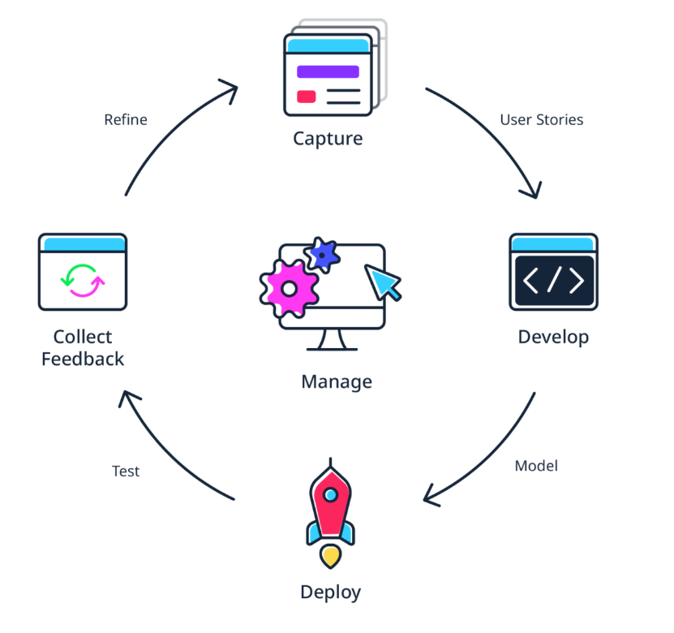
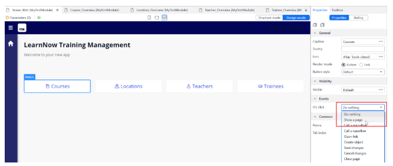
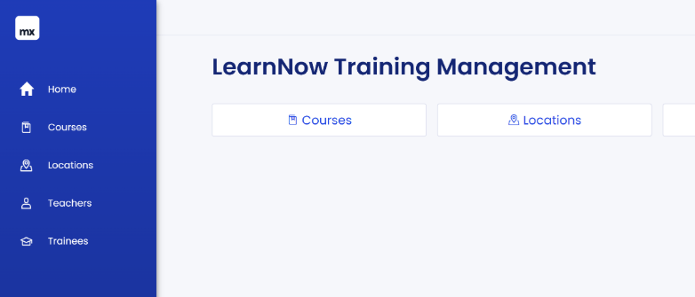

Los módulos de Become a Rapid Developer
Módulo 1
Introducción: qué es Mendix, interface de la Academy, dónde encontrar los recursos.
Detalles del Módulo 1
üìò 1.1 Welcome
Este apartado da la bienvenida al curso y establece el propósito de la ruta Rapid Developer. Mendix se presenta como una plataforma low-code que permite crear aplicaciones empresariales de forma rápida, colaborativa y visual. Se destaca que no es necesario tener experiencia previa en programación para comenzar, lo que democratiza el desarrollo de software. El enfoque está en aprender haciendo, con recursos interactivos y prácticos.
üß≠ 1.2 The Academy Interface
Aquí se explica cómo navegar por la Mendix Academy. Se muestra la estructura de los módulos, el sistema de seguimiento de progreso, los botones para avanzar o retroceder entre lecciones, y cómo acceder a recursos adicionales como foros, documentación y evaluaciones. Se enfatiza la importancia de marcar como completadas las lecciones para mantener un registro claro del avance.
üåê 1.3 Mendix Ecosystem

Este subtema ofrece una visión general del ecosistema Mendix, que incluye herramientas como Studio Pro (para desarrollo visual), Studio (para edición en la nube), Marketplace (para componentes reutilizables), y la Comunidad Mendix (para interacción entre desarrolladores). Se destaca cómo estas partes trabajan juntas para acelerar el desarrollo, fomentar la colaboración y facilitar la integración con sistemas empresariales.
üíª 1.3.1 Download Mendix Studio Pro
Se guía al usuario paso a paso para descargar e instalar Mendix Studio Pro, el entorno principal de desarrollo. Se explican los requisitos del sistema, el proceso de instalación y cómo iniciar sesión con una cuenta Mendix. También se menciona la importancia de mantener la herramienta actualizada para acceder a nuevas funciones y mejoras.
Descargar Mendix Studio Proüë§ 1.3.2 Set Up Your Community Profile
Este apartado enseña cómo configurar tu perfil en la Comunidad Mendix. Se recomienda agregar una foto, una biografía y tus intereses para facilitar la interacción con otros desarrolladores. Tener un perfil completo permite participar en foros, enviar ideas, recibir soporte y ganar visibilidad en la comunidad. También se menciona cómo vincular tu progreso académico al perfil.
üìù 1.4 Summary
Se hace una recapitulación de los temas tratados: qué es Mendix, cómo funciona la Academy, qué herramientas conforman el ecosistema, y cómo comenzar con Studio Pro y la comunidad. Se refuerza la idea de que el desarrollo low-code es accesible, potente y colaborativo. Este resumen sirve como puente hacia los siguientes módulos más técnicos.
✅ 1.5 Knowledge Check
Se presenta una evaluación interactiva para validar lo
aprendido. Las preguntas cubren conceptos clave como el
propósito de Studio Pro, la visibilidad de componentes en el
Marketplace, y la función de la Comunidad. Ejemplos:
Pregunta 1: ¿Qué es Mendix Studio Pro?
- Una herramienta para analizar big data utilizando algoritmos avanzados de Business Intelligence.
- Una herramienta donde puede codificar su aplicación web usando HTML.
- ✔ Una herramienta para crear, desarrollar e implementar aplicaciones innovadoras a la velocidad de la luz.
- Una herramienta de CRM que ofrece capacidades de CRM listas para usar.
Pregunta 2: Quieres compartir algo en el Marketplace. Deseas que solo sea visible para las personas de tu empresa. ¿Es esto posible?
- No
- ✔ Sí
Pregunta 3: ¿Dónde puedes hacer preguntas a tus compañeros y enviar ideas para nuevas funciones para Mendix?
- Academia
- ✔ Comunidad
- Apoyo
- Mercado
Detalles del Módulo 2
üéØ 2.0 Learning Objectives
Este módulo introduce los conceptos fundamentales de la planificación de aplicaciones en Mendix. Al finalizar, serás capaz de: comprender el ciclo de vida de una aplicación Mendix, definir casos de uso prácticos, aplicar metodologías ágiles de desarrollo, gestionar roles de usuario, construir equipos de trabajo colaborativos, crear historias de usuario y wireframes, y organizar el trabajo mediante épicas y sprints.
üîÑ 2.1 Application Lifecycle Management
Esta sección explica el ciclo de vida completo de una aplicación Mendix, desde la concepción hasta el despliegue y mantenimiento. Se cubren las diferentes fases: planificación, desarrollo, testing, despliegue y operaciones. Se enfatiza cómo Mendix facilita la gestión de cada etapa a través de sus herramientas integradas, permitiendo iteraciones rápidas y colaboración continua entre miembros del equipo.
üìö 2.2 Our Use Case: LearnNow
Se presenta LearnNow, una aplicación de ejemplo que servirá como caso de estudio a lo largo del módulo. LearnNow es una plataforma de aprendizaje en línea que permite a los usuarios acceder a cursos, realizar seguimiento de su progreso y obtener certificaciones. Este caso práctico ayuda a contextualizar los conceptos teóricos en un escenario realista de desarrollo.
üöÄ 2.2.1 Create a New App
Guía paso a paso para crear una nueva aplicación en Mendix. Se explica cómo seleccionar una plantilla inicial, nombrar la aplicación, elegir el tipo de licencia y configurar los parámetros básicos. También se muestra cómo acceder al entorno de desarrollo y familiarizarse con la interfaz de Studio Pro recién creada.
üëÅÔ∏è 2.2.2 Explore the Overview
Esta sección enseña a navegar por la vista general de una aplicación Mendix. Se explican los diferentes paneles y secciones: el explorador de proyectos, el editor de páginas, el editor de microflows, y las propiedades de los elementos. Se destaca cómo esta vista unificada permite tener una comprensión completa de la estructura de la aplicación.
üë• 2.4 App Roles
Explicación detallada de los diferentes roles de usuario que pueden configurarse en una aplicación Mendix. Se cubren roles como Administrador, Usuario Final, Editor, etc., y cómo definir permisos específicos para cada uno. Se muestra cómo los roles controlan el acceso a datos, páginas y funcionalidades dentro de la aplicación.
üèóÔ∏è 2.3 Project Methodology
Se introduce la metodología ágil aplicada al desarrollo con Mendix. Se explican conceptos como Scrum, sprints, reuniones diarias y retrospectivas. Se muestra cómo Mendix se integra naturalmente con enfoques ágiles, permitiendo desarrollo iterativo, retroalimentación continua y entrega incremental de valor.

üèóÔ∏è 2.4 App Roles
En Scrum, es importante tener pequeños equipos multifuncionales. De esa manera, hay una comunicación más efectiva, una documentación más fácil y una transferencia de conocimientos más rápida. Cada proceso de Scrum necesita un par de roles vitales para tener éxito: el Product Owner, el Scrum Master y el Equipo de Desarrollo. En conjunto, estos roles comprenden el Equipo Scrum.
ü§ù 2.5 Build a Team in Mendix
Esta sección enseña cómo crear y gestionar equipos de desarrollo en Mendix. Se explican los diferentes roles dentro del equipo (desarrollador, analista de negocio, tester) y cómo asignar responsabilidades. Se destaca la importancia de la colaboración y cómo Mendix facilita el trabajo en equipo mediante funciones de control de versiones y comentarios.
üìß 2.5.1 Invite Members to your App
Guía práctica para invitar miembros al equipo de desarrollo de una aplicación. Se muestra cómo enviar invitaciones por correo electrónico, asignar roles específicos a cada miembro y gestionar permisos de acceso. También se explica cómo los nuevos miembros pueden aceptar invitaciones y comenzar a colaborar en el proyecto.

üìñ 2.6 User Stories
Se profundiza en la creación y gestión de historias de usuario en Mendix. Se explica el formato estándar de una historia de usuario ("Como [rol], quiero [acción] para [beneficio]") y cómo descomponer funcionalidades complejas en historias manejables. Se muestra cómo utilizar el panel de Stories en Mendix para organizar y priorizar el trabajo.
ü뮂Äçüíº 2.7 Jimmy's User Story
Caso práctico que presenta la historia de usuario de Jimmy, un usuario ficticio de la aplicación LearnNow. Se analiza en detalle: "Como estudiante, quiero poder ver mi progreso en los cursos para saber cuánto me falta para completarlos". Este ejemplo concreto ayuda a entender cómo transformar necesidades de usuarios en requisitos técnicos específicos.
✏️ 2.8 Create a Wireframe
Introducción a la creación de wireframes en Mendix. Se explica qué son los wireframes, su importancia en el diseño de interfaces y cómo crearlos utilizando las herramientas de Mendix. Se cubren conceptos básicos de diseño UX y cómo los wireframes ayudan a validar ideas antes del desarrollo completo.

üè† 2.8.1 Create Wireframes for your Homepage
Tutorial práctico para crear wireframes de la página de inicio de LearnNow. Se guía paso a paso en el diseño de los elementos principales: menú de navegación, lista de cursos, área de progreso y secciones destacadas. Se muestran las herramientas de arrastrar y soltar de Mendix para agregar y configurar widgets básicos.
üìã 2.9 Epics
Explicación del concepto de épicas en la planificación de proyectos Mendix. Se define qué son las épicas (agrupaciones de historias de usuario relacionadas) y cómo ayudan a organizar el trabajo en componentes lógicos. Se muestra cómo crear y gestionar épicas en Mendix, y cómo relacionarlas con las historias de usuario específicas.
➕ 2.10 Adding User Stories
Se profundiza en las técnicas para agregar y gestionar historias de usuario en Mendix. Se cubren métodos como la creación manual, importación desde hojas de cálculo, y duplicación de historias existentes. También se explican mejores prácticas para describir criterios de aceptación y definir estimaciones de esfuerzo.

✨ 2.10.1 Add your First User Story
Tutorial práctico para crear la primera historia de usuario en el proyecto LearnNow. Se guía a través del proceso completo: definir el título, descripción, criterios de aceptación, asignar prioridad y estimar esfuerzo. Se muestra cómo vincular la historia de usuario con épicas y sprints específicos.
üì• 2.10.2 Import User Stories
Instrucciones para importar múltiples historias de usuario desde archivos externos (como Excel o CSV). Se explica el formato requerido para la importación, cómo mapear columnas y validar la información importada. Esta técnica es útil para migrar historias de usuario desde otras herramientas de gestión de proyectos.
üèóÔ∏è 2.10.3 Create Epics
Guía práctica para crear épicas en Mendix. Se muestra cómo definir épicas para agrupar funcionalidades relacionadas (como "Gestión de Cursos", "Seguimiento de Progreso", "Sistema de Certificaciones"). Se explica cómo asignar historias de usuario a épicas y cómo utilizar las épicas para planificar releases mayores.
üèÉ 2.10.4 Start a New Sprint
Explicación de cómo iniciar y gestionar sprints en Mendix. Se cubre el proceso de planificación de sprint: seleccionar historias de usuario para incluir, definir objetivos del sprint, asignar tareas a miembros del equipo y establecer fechas de inicio y fin. También se muestra cómo realizar seguimiento del progreso durante el sprint.

üìù 2.11 Summary
Resumen de los conceptos clave del módulo: desde la creación de una aplicación hasta la planificación detallada mediante historias de usuario, épicas y sprints. Se refuerza la importancia de la metodología ágil y la colaboración en equipo. Este resumen prepara para el siguiente módulo que se enfocará en el desarrollo práctico de la aplicación.
✅ 2.12 Knowledge Check
Se presenta una evaluación interactiva para validar lo
aprendido. Las preguntas cubren conceptos clave como la
gestión del ciclo de vida de aplicaciones, creación de
historias de usuario, configuración de roles, y metodologías
ágiles. Ejemplos:
Pregunta 1: ¿Cuál es el propósito principal del Application Lifecycle Management en Mendix?
- Gestionar únicamente la fase de desarrollo de la aplicación.
- Controlar solo los costos y presupuestos del proyecto.
- ✔ Gestionar todas las fases de la aplicación desde la planificación hasta el mantenimiento.
- Administrar exclusivamente los permisos de los usuarios finales.
Pregunta 2: ¿Qué formato sigue una historia de usuario bien definida?
- "El sistema debe permitir X funcionalidad"
- ✔ "Como [rol], quiero [acción] para [beneficio]"
- "Desarrollar la función Y en Z tiempo"
- "Implementar módulo de seguridad"
Pregunta 3: ¿Qué son las épicas en la planificación de proyectos Mendix?
- Historias de usuario muy largas y complejas
- Informes de errores del sistema
- ✔ Agrupaciones de historias de usuario relacionadas
- Reuniones de planificación mensuales
Módulo 2: Planificación de Aplicaciones
Agile y colaboración entre TI y negocio. Aprende a planificar aplicaciones Mendix usando metodologías ágiles, historias de usuario y gestión de equipos.
Detalles del Módulo 3
üéØ 3.0 Learning Objectives
Este módulo introduce los fundamentos prácticos del desarrollo low-code en Mendix. Al finalizar, serás capaz de: navegar eficientemente por Mendix Studio Pro, crear páginas web utilizando layouts con columnas y filas, agregar y configurar botones funcionales, gestionar múltiples páginas y navegación entre ellas, identificar y corregir errores, utilizar el Team Server para control de versiones, y realizar commits de tus cambios de manera colaborativa.
üèóÔ∏è 3.1 The Next Phase: Building your App
Esta sección marca la transición de la planificación a la construcción práctica de la aplicación. Se explica cómo llevar las historias de usuario y wireframes creados en el módulo anterior a una aplicación funcional. Se enfatiza el enfoque iterativo del desarrollo low-code y cómo Mendix permite construir prototipos funcionales rápidamente.

üîç 3.2 Explore Mendix Studio Pro
Tour guiado por la interfaz de Mendix Studio Pro. Se explican las principales áreas de trabajo: el Domain Model, Page Editor, Microflow Editor, y Properties Pane. Se muestra cómo personalizar el workspace según las preferencias del desarrollador y acceder a las herramientas más utilizadas en el desarrollo diario.
üè† 3.2.1 Create the Home Page of your App
Tutorial práctico para crear la página de inicio de la aplicación LearnNow. Se guía paso a paso en la selección de templates, configuración de layouts básicos, y establecimiento de la página como home en la configuración de navegación. Se introducen conceptos fundamentales de diseño de interfaz de usuario.
üìê 3.3 Columns and Rows
Explicación detallada del sistema de layouts basado en columnas y filas en Mendix. Se cubren los diferentes tipos de contenedores, cómo crear estructuras responsivas, y mejores prácticas para organizar elementos visuales. Se muestra cómo utilizar el sistema de grillas para crear interfaces profesionales y adaptables.
üìè 3.3.1 Add Columns to your App
Ejercicio práctico para implementar columnas en la página de inicio. Se enseña a dividir el espacio en secciones, ajustar proporciones, y organizar widgets dentro de las columnas. Se explican técnicas para mantener consistencia visual y asegurar que el diseño sea responsive en diferentes dispositivos.
üîò 3.4 Buttons
Introducción a los diferentes tipos de botones disponibles en Mendix y sus casos de uso. Se cubren botones primarios, secundarios, de enlace, y sus variantes de estilo. Se explica cómo configurar acciones asociadas a los botones y definir comportamientos de interacción con el usuario.
üñ±Ô∏è 3.4.1 Add Buttons to your Home Page
Tutorial práctico para agregar botones funcionales a la página de inicio de LearnNow. Se muestra cómo colocar botones estratégicamente, configurar sus propiedades visuales (color, tamaño, iconos), y definir acciones básicas. Se enfatiza en la importancia de los call-to-action efectivos.
üìÑ 3.5 Pages
Conceptos avanzados sobre creación y gestión de páginas en Mendix. Se explican los diferentes tipos de páginas (formularios, listas, dashboards), cómo organizarlas en la estructura de navegación, y técnicas para mantener consistencia entre páginas mediante el uso de layouts y building blocks reutilizables.
üÜï 3.5.1 Create Pages
Guía completa para crear nuevas páginas en la aplicación. Se cubre la selección de templates apropiados, configuración de títulos y URLs, y organización en carpetas lógicas. Se muestra cómo crear páginas para diferentes funcionalidades del caso LearnNow (lista de cursos, perfil de usuario, progreso).

üîó 3.5.2 Link your Pages to the Buttons
Tutorial para conectar la navegación entre páginas mediante botones. Se enseña a configurar la acción "Show Page" en los botones, pasar parámetros entre páginas, y manejar diferentes flujos de navegación. Se incluyen ejemplos prácticos de navegación forward y backward.
⚠️ 3.6 Errors
Introducción al sistema de manejo de errores en Mendix. Se explica cómo identificar diferentes tipos de errores (de compilación, de consistencia, de runtime), utilizar el Error Pane para diagnosticar problemas, y aplicar fixes recomendados. Se enfatiza en la importancia de resolver errores antes del commit.
☁️ 3.7 Team Server
Explicación del Team Server como sistema de control de versiones integrado en Mendix. Se cubren conceptos fundamentales de colaboración: branches, commits, updates, y merges. Se muestra cómo el Team Server facilita el trabajo en equipo y mantiene la integridad del proyecto.
üíæ 3.7.1 Commit changes
Guía práctica para realizar commits de cambios en el Team Server. Se explica cómo escribir mensajes de commit descriptivos, seleccionar los cambios a incluir, y verificar el historial de commits. Se enfatizan las mejores prácticas para commits frecuentes y significativos.
üîé 3.8 Check Your Work
Técnicas para revisar y validar el trabajo desarrollado. Se cubren métodos de testing básicos: preview en browser, verificación de funcionalidades, testing de navegación, y revisión de consistencia visual. Se introduce el concepto de "click-through prototyping" para validar con stakeholders.

üìù 3.9 Summary
Recapitulación de los conceptos fundamentales del desarrollo low-code cubiertos en el módulo. Se refuerza el flujo de trabajo desde la creación de páginas hasta el commit de cambios, destacando la potencia de Mendix para construir interfaces funcionales rápidamente. Preparación para módulos más avanzados de modelado de datos.

✅ 3.10 Knowledge Check
Se presenta una evaluación interactiva para validar la comprensión de los conceptos del módulo. Las
preguntas cubren temas como: creación de layouts con columnas, configuración de botones, gestión de
páginas, manejo de errores, y uso del Team Server. Ejemplos:
Pregunta 1: A page is responsive when:
- It allows dynamic data to be displayed.
- It rotates as you rotate your mobile.
- ✔ It works and looks good on all devices.
- It includes user interaction.
Pregunta 2: How many rows can a page have?
- 4
- ✔ As many as you need
- 1
- 12
Pregunta 3: It is possible to place multiple widgets in a container.
- False
- ✔ True
Pregunta 4: You downloaded the latest version of the project from the Team Server and made some changes to the app. What do you need to do next so that your team members can view your changes?
- Synchronize with the Team Server
- Publish your app to the cloud
- Update the user story from Running to Done
- ✔ Commit your app to the Team Server
Módulo 3: Fundamentos de Desarrollo Low-Code
Aprende los fundamentos prácticos del desarrollo low-code: creación de páginas, layouts, botones y navegación en Mendix Studio Pro.
Detalles del Módulo 4
üéØ 4.0 Learning Objectives
Este módulo se enfoca en el manejo de datos dinámicos en aplicaciones Mendix. Al finalizar, serás capaz de: entender cómo mostrar datos dinámicos en páginas, crear y configurar un Domain Model, definir diferentes tipos de atributos, conectar galerías con fuentes de datos, utilizar parámetros para mostrar datos específicos, ejecutar y probar tu aplicación, crear menús de navegación, trabajar con objetos y crear páginas para editar y crear nuevos registros.
üìä 4.1 Dynamic Data on Pages
Introducción al concepto de datos dinámicos y cómo se diferencian de los datos estáticos. Se explica cómo Mendix permite mostrar información que cambia según los datos almacenados en la base de datos, y cómo los widgets pueden conectarse a estas fuentes de datos para crear experiencias interactivas y personalizadas para los usuarios.
üèóÔ∏è 4.2 The Domain Model
Explicación detallada del Domain Model como el corazón de cualquier aplicación Mendix. Se cubren los conceptos fundamentales de entidades, atributos y asociaciones, y cómo representan la estructura de datos de la aplicación. Se muestra cómo crear y organizar entidades para modelar correctamente el dominio del negocio.
üìã 4.3 Attribute Types
Guía completa sobre los diferentes tipos de atributos disponibles en Mendix. Se explican atributos primitivos (String, Integer, Decimal, Boolean, DateTime), enumeraciones y tipos especializados. Se cubren las consideraciones para seleccionar el tipo de atributo apropiado según el tipo de dato que se necesita almacenar.

⚙️ 4.3.1 Define Attribute Types
Ejercicio práctico para definir tipos de atributos en las entidades del Domain Model. Se muestra cómo agregar atributos a entidades existentes, configurar sus propiedades (longitud, formato, valores por defecto) y aplicar validaciones. Se utilizan ejemplos del caso LearnNow para atributos de cursos y usuarios.
üîÑ 4.4 Display Dynamic Data
Técnicas para mostrar datos dinámicos en las páginas de la aplicación. Se explican los diferentes tipos de contenedores de datos (data views, list views, galleries) y cómo configurar su fuente de datos. Se cubre el concepto de contexto y cómo los datos fluyen a través de las páginas y microflows.
üîó 4.4.1 Create and Connect Entities
Tutorial práctico para crear asociaciones entre entidades en el Domain Model. Se muestra cómo establecer relaciones uno-a-muchos y muchos-a-muchos, y cómo estas relaciones se reflejan en la interfaz de usuario. Se utiliza el ejemplo de cursos y módulos en LearnNow para demostrar las conexiones.

üñºÔ∏è 4.4.2 Connect the Galleries
Guía paso a paso para conectar galerías con fuentes de datos. Se enseña cómo configurar list views y template grids para mostrar listas de objetos, personalizar la visualización de cada elemento, y agregar funcionalidades como filtrado y ordenamiento. Se implementa una galería de cursos en LearnNow.
üéØ 4.4.3 Display Dynamic Data with Parameters
Técnicas avanzadas para mostrar datos específicos utilizando parámetros. Se explica cómo pasar parámetros entre páginas, filtrar datos basados en criterios específicos, y crear vistas detalladas de objetos individuales. Se implementa la funcionalidad de ver detalles de un curso específico en LearnNow.

üöÄ 4.5 Run your App
Procedimiento completo para ejecutar y probar la aplicación. Se cubre cómo iniciar la aplicación en diferentes entornos (local, sandbox), realizar testing de las funcionalidades implementadas, identificar y corregir errores en tiempo de ejecución, y utilizar las herramientas de debugging integradas en Mendix.

üß≠ 4.6 The Navigation Menu
Diseño e implementación del menú de navegación de la aplicación. Se explican los diferentes tipos de navegación (responsiva, sidebar, tab bar) y cómo configurar la estructura de menús en Mendix. Se cubren mejores prácticas para crear una experiencia de navegación intuitiva y consistente.
⚡ 4.6.1 Create the Navigation Menu
Ejercicio práctico para crear y personalizar el menú de navegación de LearnNow. Se muestra cómo agregar items de menú, organizarlos en grupos, configurar iconos y permisos de acceso, y asegurar que la navegación sea responsive en dispositivos móviles.

üì¶ 4.7 Objects
Conceptos fundamentales sobre objetos en Mendix. Se explica la diferencia entre entidades (definiciones) y objetos (instancias), cómo se crean y gestionan los objetos en tiempo de ejecución, y cómo persisten en la base de datos. Se cubre el ciclo de vida completo de un objeto.
üÜï 4.7.1 Use Buttons to Create Objects
Tutorial para implementar funcionalidad de creación de objetos mediante botones. Se muestra cómo configurar botones para crear nuevos objetos, inicializar sus atributos, y guardarlos en la base de datos. Se implementa la funcionalidad de "Crear nuevo curso" en LearnNow.

✏️ 4.8 New/Edit Pages
Diseño y creación de páginas para crear y editar objetos. Se explican los patrones comunes para formularios de entrada de datos, técnicas de validación, y manejo de diferentes estados (nuevo vs. edición). Se cubren mejores prácticas para crear experiencias de usuario efectivas en formularios.
üõ†Ô∏è 4.8.1 Create New/Edit Pages
Implementación práctica de páginas para crear y editar cursos en LearnNow. Se muestra cómo diseñar formularios eficientes, configurar data views para el contexto de edición, implementar validaciones de datos, y manejar las acciones de guardar y cancelar.
üìù 4.9 Summary
Recapitulación de los conceptos clave del módulo sobre trabajo con datos dinámicos. Se refuerza el flujo completo desde el modelado de datos en el Domain Model hasta la visualización y edición en la interfaz de usuario. Preparación para módulos más avanzados sobre lógica de negocio y microflows.
✅ 4.10 Knowledge Check
Evaluación interactiva para validar la comprensión de los conceptos del módulo 4. Las preguntas cubren temas como: Domain Model, tipos de atributos, visualización de datos dinámicos, navegación, creación de objetos y páginas de edición.
Question 1: A list view is a widget used to
- Display bullet points
- Display dynamic data
- Change text from horizontal to vertical view
- Display static text
Pregunta 2: The value 1.23 could be stored in an attribute of the type:
- Long
- AutoNumber
- Decimal
- Integer
Pregunta 3: The attribute type Enumeration is used to store:
- Automatically generated positive or negative whole number
- A whole number that can only be positive
- A positive or negative number
- A list of predefined values
Pregunta 4: Which name should you use for an entity representing a maintenance report?
- Maintenance-Report
- Maintenance Report
- Maintenance_Report
- MaintenanceReport
Módulo 4: Trabajando con Datos Dinámicos
Aprende a manejar datos dinámicos, crear Domain Models, definir atributos y conectar interfaces con fuentes de datos en Mendix.
Módulo 5: Datos Asociados
Modelado de datos y lógica de negocio.
Detalles del Módulo 5
üéØ 5.1 Programacion de Eventos de Capacitacion
Tras completar el primer caso de usuario, se introduce una nueva funcionalidad: permitir al administrador programar eventos de capacitación para que los maestros consulten sus horarios desde la aplicación. Para lograrlo, es necesario extender el modelo de dominio agregando nuevas entidades, lo que modifica la estructura de la base de datos. En Mendix, cada entidad se convierte en una tabla, cada atributo en una columna, y cada objeto en una fila. Además, el sistema genera automáticamente un identificador único (ID) para cada objeto. Los cambios en el modelo de dominio se sincronizan automáticamente al ejecutar la aplicación, y cualquier modificación en nombres de entidades o atributos se actualiza en todo el sistema sin afectar su funcionamiento.

üìä 5.1.1 Add a New Entity to the Domain Model
Para permitir que el administrador programe eventos de capacitación, se crea una nueva entidad en el modelo de dominio llamada TrainingEvent, siguiendo la convención PascalCase y manteniéndola en singular. Esta entidad incluye dos atributos: StartDate y EndDate, ambos de tipo fecha y hora, para definir el periodo del evento. Aunque no se agregan atributos como ubicación, curso o maestro, esa información ya existe en otras entidades y se vinculará mediante asociaciones. Esta estructura permite que los profesores consulten qué curso impartirán, dónde y en qué fechas, directamente desde la aplicación.

üèóÔ∏è 5.2 Asssociations in the Domain Model
Las asociaciones permiten que las entidades del modelo de dominio se relacionen entre sí, representando conexiones como flechas entre objetos. En el caso de los eventos de capacitación, cada uno está vinculado a un curso, una ubicación y un maestro, aunque estos elementos pueden reutilizarse en múltiples eventos. Mendix ofrece tres tipos de asociaciones: uno a muchos (1–), uno a uno (1–1) y muchos a muchos (–*), cada una con ejemplos prácticos como jugadores y equipos en fútbol. Desde la versión 10.21, algunas asociaciones pueden implementarse como directas, optimizando el rendimiento y reduciendo el uso de tablas intermedias. Crear una asociación no implica que los objetos estén vinculados automáticamente, sino que se habilita la posibilidad de hacerlo. Esta etapa se enfoca en estructurar los eventos de capacitación antes de incorporar registros de participantes.

üìã 5.2.1 Add Associations
Para estructurar correctamente los eventos de capacitación, se deben crear asociaciones entre la entidad TrainingEvent y las entidades Course, Location y Teacher, permitiendo registrar qué curso se impartirá, dónde y por quién. Las asociaciones se crean visualmente en el modelo de dominio y, por defecto, son de tipo uno a muchos, aunque pueden modificarse según sea necesario. Mendix asigna nombres automáticos a las asociaciones siguiendo la convención Entidad1_Entidad2, lo cual facilita su identificación. Es importante organizar el modelo para que las etiquetas sean legibles, ya que esta estructura será la base para futuras funcionalidades. Si se comete un error en la dirección de la asociación, puede invertirse fácilmente.

⚙️ 5.2.2 Create Training Event Overview
Con el modelo de dominio ya ampliado, se procede a crear la página TrainingEvent_Overview para administrar los eventos de capacitación. Se añade un nuevo botón en la página de inicio con el título "Eventos de capacitación", configurado para abrir esta nueva vista. La página se construye usando el diseño Atlas_SideBar y una plantilla de lista, como en otras vistas de resumen. Se conecta una galería a la entidad TrainingEvent, que servirá como fuente de datos principal. Esta página mostrará información combinada de cuatro entidades mediante asociaciones, permitiendo visualizar de forma integrada qué curso se impartirá, dónde, por quién y en qué fechas.

üîÑ 5.2.3 Use Associations in Parameters
Una vez creada la página de descripción general, se configura la vista de lista para mostrar información clave del evento de capacitación: el título del curso, las fechas de inicio y fin, el nombre del profesor y la ubicación. Para ello, se utilizan widgets de texto conectados mediante asociaciones a las entidades correspondientes. Cada parámetro se vincula a través de una plantilla que accede a los atributos relacionados, como {.../Course/Title}. Este proceso permite que los datos se muestren dinámicamente en la interfaz. Al finalizar, se recomienda agregar un elemento de menú para acceder fácilmente a esta página desde cualquier parte de la aplicación. El siguiente paso será crear el botón y la página NewEdit para gestionar nuevos eventos.

üîó 5.2.4 Create Training Event NewEdit Page
Se crea la página TrainingEvent_NewEdit junto con un botón "Agregar" en la vista de descripción general, permitiendo configurar nuevos eventos de capacitación. A diferencia de formularios anteriores, esta página utiliza cuadros combinados para establecer asociaciones con entidades existentes: curso, ubicación y profesor. Estos widgets no están ligados a atributos, sino que permiten seleccionar objetos ya registrados en la base de datos. Mendix los configura automáticamente, pero es posible personalizar qué atributo se muestra en cada lista. Finalmente, se ajusta el comportamiento de la galería para que al hacer clic en un evento se abra esta página en modo edición. Al ejecutar la aplicación, ya es posible programar eventos con toda la información necesaria.

üñºÔ∏è 5.2.5 Add Training Events from the Homepage
Dado que la mayor parte del trabajo de Jimmy se centra en programar eventos de capacitación, se añade un nuevo botón en la página de inicio que permite acceder directamente al formulario TrainingEvent_NewEdit, sin pasar por la vista general. Este botón se configura para crear un nuevo objeto de tipo TrainingEvent y abrir la página de edición correspondiente. Se recomienda copiar un botón existente para mantener coherencia visual y funcional. Esta mejora optimiza el flujo de trabajo del administrador, reduciendo el tiempo necesario para registrar nuevos eventos. Una vez probado y confirmado su funcionamiento, se puede marcar la historia de usuario como completada.

üéØ 5.3 Information Entities
Para inscribir aprendices en eventos de capacitación, se requiere una conexión entre las entidades Trainee y TrainingEvent. Aunque podría parecer una asociación de muchos a muchos, Jimmy necesita almacenar información adicional como la fecha de inscripción, asistencia y un número de registro único. Como estas propiedades no pueden guardarse directamente en una asociación, se introduce una entidad intermedia llamada entidad de información. Esta entidad permite representar cada inscripción como un objeto único, vinculado a un aprendiz y a un evento específico mediante asociaciones uno a muchos. Así se logra una estructura más flexible y detallada para gestionar las inscripciones.

üöÄ 5.3.1 Extend the Domain Model
Para registrar inscripciones a eventos de capacitación, se añade una nueva entidad llamada Registration entre TrainingEvent y Trainee, cumpliendo con la historia de usuario del administrador. Esta entidad incluye tres atributos: Número (autonumeración para generar un ID único por registro), Fecha (tipo DateAndTime con valor predeterminado [%CurrentDateTime%]) y Asistieron (booleano para indicar si el aprendiz asistió). Se crean asociaciones de uno a muchos desde Registration hacia TrainingEvent y Trainee, permitiendo que cada registro esté vinculado a un solo evento y a un solo aprendiz. Esta estructura facilita el seguimiento detallado de las inscripciones.

üß≠ 5.4 Nested Data
Para gestionar eficientemente los registros de inscripción, se introduce el concepto de anidamiento en Mendix. Dado que los eventos de capacitación pueden acumular miles de registros con el tiempo, mostrar todos en una sola lista sería impráctico. El anidamiento permite filtrar automáticamente los registros según el evento seleccionado, mostrando solo los relevantes. Esto se logra insertando una galería o vista de lista dentro de una vista de datos de la entidad TrainingEvent, aprovechando el contexto para limitar los resultados. Se crea un botón en la página de descripción general del evento que lleva a una nueva página anidada, donde se visualizan y gestionan los registros específicos de cada evento.

⚡ 5.4.1 Create a Registration Page
Con la estructura de datos lista, se procede a crear la interfaz para gestionar los registros de inscripción. En la página TrainingEvent_Overview, se añade un botón que abrirá la nueva página TrainingEvent_Registration_Overview, diseñada desde cero con plantilla en blanco y navegación Atlas_Default. Para mejorar la experiencia visual, se ajusta el título del botón a "Registros" y se aplica el estilo "Información". Esta página manejará dos entidades: TrainingEvent y Registration, y servirá como base para anidar datos en la siguiente etapa, mostrando únicamente los registros vinculados al evento seleccionado.

üì¶ 5.4.2 How to Nest Data
En la página TrainingEvent_Registration_Overview, se implementa el anidamiento para mostrar únicamente los registros asociados al evento de capacitación seleccionado. Se inserta una vista de datos conectada al contexto de TrainingEvent, seguida de un encabezado dinámico que muestra el curso y la fecha de inicio. Dentro de esta vista, se añade una galería configurada para mostrar solo los registros vinculados al evento actual, evitando listas extensas e irrelevantes. Cada elemento de la galería presenta el nombre del aprendiz, número de registro y fecha de inscripción. Finalmente, se agrega un enlace para volver a la página anterior y se prepara el entorno para crear nuevos registros mediante una página NewEdit.

üÜï 5.4.3 Create Registration NewEdit
Se habilita la funcionalidad para agregar y editar registros de inscripción mediante la creación de la página Registration_NewEdit. Se configura un botón "Nuevo" que crea un objeto de tipo Registration, restringido al contexto del evento de capacitación actual. La galería se ajusta para que al hacer clic en un registro se abra esta nueva página en modo edición. Dentro del formulario, se reorganizan los campos para que la selección del aprendiz sea el primer elemento editable, destacando su importancia. Una vez implementado, se recomienda ejecutar la aplicación localmente para probar el flujo completo. Con esto, se concluye la historia de usuario y se consolida la gestión de inscripciones en la app.

üìù 5.5 Summary
En este módulo, se le presentaron las asociaciones, que permiten conectar diferentes tipos de datos para formar relaciones.
✅ 5.6 Knowledge Check
Evaluación interactiva para validar la comprensión de los conceptos del módulo 5.
Question 1: Una conexión entre dos entidades en Mendix se llama:
- Una relacion
- Una asociación
- Un atributo
- Una intersección
Pregunta 2: ¿Qué logran los datos anidados?
- Evita que los datos internos sean editados por las personas equivocadas.
- Permite el acceso a asociaciones de muchos a muchos.
- Restringe los datos de un widget en el contexto del otro.
- No es necesario, pero muestra a otros desarrolladores que los datos internos son únicos.
Pregunta 3: ¿Cómo se anidan los datos?
- Colocando una vista de lista o un widget de galería dentro de un contenedor de pestañas.
- Configurando el origen de datos de una vista de lista o un widget de galería para utilizar la regla de seguridad correcta.
- Colocando una vista de datos dentro de una vista de lista o un widget de galería.
- Colocando una vista de lista o un widget de galería dentro de una vista de datos.
Módulo 6: Agrega lógica personalizada a tu aplicación
En este módulo, aprenderá a usar Mendix Studio para crear microflujos que le permitirán crear una lógica personalizada para su aplicación.
Detalles del Módulo 6
üéØ 6.1 Introduccion a la Logica
Este módulo marca el inicio de la lógica personalizada en la aplicación, utilizando microflujos para automatizar tareas y mejorar la eficiencia. Jimmy necesita programar eventos de capacitación de forma más precisa, diferenciando variantes de cursos y calculando fechas automáticamente. Para ello, el equipo define dos tareas: programar eventos desde la página Course_Overview con el curso precargado, y calcular la fecha de finalización según la duración. Los microflujos, modelados visualmente, permiten extender comportamientos, validar datos, integrar sistemas externos y ejecutar procesos específicos. Se pueden activar mediante botones, eventos de widgets o cambios en entidades. Esta lógica complementa las acciones estándar de Mendix y prepara el terreno para funcionalidades más inteligentes y sostenibles.
üìä 6.2 Microflujos, nanoflujos, flujos de trabajo
Este módulo presenta los tres tipos de flujos disponibles en Mendix: microflujos, nanoflujos y flujos de trabajo, cada uno con características específicas según el contexto de uso. Los microflujos se ejecutan en el servidor, requieren conexión a la base de datos y permiten operaciones complejas con transacciones completas. Los nanoflujos se ejecutan en el cliente, no requieren conexión y son más rápidos para tareas locales, aunque no permiten revertir acciones. Los flujos de trabajo están diseñados para procesos empresariales más amplios, con múltiples rondas de interacción y mayor participación del usuario. En esta ruta de aprendizaje se trabajará principalmente con microflujos, pero se destaca que los otros tipos pueden ser más adecuados en ciertos escenarios.

üèóÔ∏è 6.3 Ejemplo de un microflujo
Este módulo muestra cómo reemplazar una acción predeterminada con un microflujo personalizado. En lugar de usar el botón estándar para crear un evento de capacitación, se puede configurar el botón para llamar a un microflujo, el cual ejecuta las acciones necesarias de forma controlada. El microflujo se modela visualmente con cajas azules que representan acciones y flechas negras que indican el flujo de ejecución, desde el inicio (punto verde) hasta el final (punto rojo). Aunque este ejemplo no es necesario para la funcionalidad actual, sirve para ilustrar cómo los microflujos permiten extender el comportamiento de la aplicación más allá de lo predeterminado. En el siguiente módulo, se aprenderá a construir microflujos desde cero.

üìã 6.4 Elementos de un microflujo
Este módulo presenta la estructura básica del editor de microflujos en Mendix, donde se modela la lógica personalizada de la aplicación. Un microflujo comienza con un evento de inicio (punto verde) y termina con un evento de finalización (punto rojo), conectados por un flujo representado por una flecha. Sobre esta línea se agregan actividades (bloques azules) que ejecutan acciones, decisiones (diamantes) que permiten bifurcar y unir caminos según condiciones, y artefactos que aportan datos de entrada o comentarios. Todos estos elementos se encuentran en la caja de herramientas del editor, y permiten construir procesos visuales claros y mantenibles.

⚙️ 6.4.1 Uso de un microflujo para programar evento de capacitacion
Para mejorar la eficiencia de programación, se crea un botón en la página Course_Overview que permite iniciar un evento de capacitación con el curso ya seleccionado. Este comportamiento requiere un microflujo personalizado, ya que el botón debe no solo crear el objeto TrainingEvent, sino también precargar el curso y abrir la página TrainingEvent_NewEdit. El microflujo se llama ACT_Course_ScheduleTrainingEvent, siguiendo la convención de nombre: prefijo (ACT), entidad (Course) y operación (ScheduleTrainingEvent). El microflujo incluye dos actividades: Crear objeto para generar el evento y Mostrar página para abrir el formulario de edición. El parámetro del curso se transmite desde el botón, permitiendo que el campo correspondiente se complete automáticamente. Esta lógica extiende el comportamiento predeterminado y prepara el flujo para su configuración detallada en el siguiente módulo.

üîÑ 6.4.2 Configurar actividades de Microflow
En este módulo se configura el microflujo ACT_Course_ScheduleTrainingEvent para que cree un objeto TrainingEvent y abra la página TrainingEvent_NewEdit con el curso ya preseleccionado. Se asigna automáticamente el nombre de variable NewTrainingEvent, que representa el nuevo objeto dentro del microflujo. Luego, se configura la actividad Mostrar página para entregar ese objeto a la página de edición. Para preestablecer el curso, se modifica la actividad Crear objeto usando una expresión de microflujo que asigna la asociación TrainingEvent_Course al parámetro $Course recibido desde la página Course_Overview. Esta configuración permite que el formulario se abra con el curso ya seleccionado, optimizando el flujo de trabajo de Jimmy y reduciendo errores manuales.

üîó 6.5 Recomendador de Mendix Logic
Este módulo presenta el Mendix Logic Recommender, una herramienta de asistencia basada en inteligencia artificial integrada en Studio Pro. Su función es sugerir y configurar automáticamente los siguientes pasos dentro de un microflujo, basándose en patrones de uso y buenas prácticas aprendidas mediante aprendizaje automático y profundo. Al hacer clic en el punto azul que aparece entre elementos del microflujo, el recomendador ofrece hasta cinco acciones sugeridas, completando incluso los parámetros necesarios. Esta función forma parte del sistema MAIA (Mendix AI Assistance) y puede activarse o desactivarse desde el menú de preferencias. Actualmente, cerca del 40 % de las actividades de microflujo se crean con ayuda de esta herramienta, lo que acelera el desarrollo y mejora la precisión del modelado.

üìù 6.6 Summary
¡Felicitaciones, trabajaste en Mendix Studio para automatizar algunos procesos dentro de la aplicación LearnNow y ayudaste a Jimmy a ahorrar algo de tiempo! En este módulo, aprendiste a crear microflujos, la lógica personalizada de las aplicaciones de Mendix. No olvides comprometer tu trabajo y poner la historia en marcha. En el siguiente módulo, verá cómo puede automatizar aún más procesos dentro de la aplicación y ayudar a Jimmy a ahorrar más tiempo.
✅ 6.7 Knowledge Check
Evaluación interactiva para validar la comprensión de los conceptos del módulo 6.
Question 1: ¿Qué son los microflujos?
- Un modelo de datos de la aplicación
- La lógica personalizada de una aplicación Mendix
- Pequeños procesos de desarrollo
- Una forma de describir todo el flujo del proceso de la aplicación
Pregunta 2: ¿Cuáles son los tres elementos de microflujo?
- Tabla de decisiones, Combinación exclusiva, Evento final
- Actividad, Tabla de decisión, Parámetro
- Actividad, Evento final, Parámetro
- Actividad, Evento final, Tabla de decisiones
Pregunta 3: ¿Cuántos eventos de inicio puede tener un microflujo?
- Ilimitado
- Esto depende del número de parámetros de entrada
- Esto depende del desencadenante del microflujo
- Uno
Pregunta 4: Los microflujos pueden ser activados por:
- Evento de entidad, botón de acción, botón predeterminado
- Botón predeterminado, Diseño de navegación, Evento de widget
- Evento de widget, botón de acción, botón predeterminado
- Evento de entidad, botón de acción, evento de widget
Módulo 7: Automatización de procesos dentro de una aplicación
En este módulo aprenderás a automatizar procesos dentro de una app creando microflujos usando Mendix Studio Pro.
Detalles del Módulo 7
üéØ 7.1 Automatizacion de Procesos
Este módulo introduce la automatización de procesos mediante microflujos para mejorar la experiencia del usuario y reducir tareas repetitivas. Se destaca cómo los microflujos permiten completar automáticamente campos como la fecha de finalización de un evento de capacitación, calcular el número total de registros, o prellenar datos según el contexto. Estas mejoras son especialmente útiles para usuarios móviles o en escenarios donde se repite información. En la aplicación LearnNow, se utilizarán microflujos para configurar eventos de widgets, modificar objetos y valores, manejar errores y guiar al usuario sobre qué datos faltan. Esto optimiza el flujo de trabajo de Jimmy y prepara el terreno para automatizar el cálculo de fechas en el siguiente módulo.
üìä 7.2 Completar automaticamente la fecha de finalizacion
Este módulo guía la automatización del campo fecha de finalización en los eventos de capacitación, calculándola a partir de la fecha de inicio y la duración del curso. Para lograrlo, se crean eventos de widget en los campos de entrada correspondientes, que activan un microflujo. Este microflujo utiliza una actividad Change Object para modificar el objeto TrainingEvent, aplicando la función addDays en una expresión que suma la duración del curso a la fecha de inicio. Esta automatización evita errores manuales y mejora la eficiencia. Finalmente, se recomienda probar exhaustivamente la funcionalidad, corregir errores y comprometer los cambios.

üèóÔ∏è 7.3 Activacion de un miroflujo desde un widget de entrada
Este módulo explica cómo activar un microflujo desde un widget de entrada, como el selector de referencia para el curso o el selector de fecha para la fecha de inicio. A diferencia de los botones, los widgets de entrada pueden disparar microflujos en tres momentos: al entrar (cuando el usuario hace clic en el widget), al cambiar (cuando modifica el valor y abandona el campo), y al salir (cuando cierra el widget, haya cambiado o no el valor). Para calcular automáticamente la fecha de finalización del evento de capacitación, se recomienda activar el microflujo al cambiar el valor del curso o la fecha de inicio, ya que es cuando se dispone de los datos necesarios para realizar el cálculo.

üìã 7.3.1 Configurar los widgets de entrada
Este módulo enseña a configurar eventos de widget que activan un microflujo para calcular automáticamente la fecha de finalización de un evento de capacitación. Se modifica el selector de fecha (StartDate) y el selector de curso (Course) en la página TrainingEvent_NewEdit, asignándoles un evento On change que llama al microflujo OCH_TrainingEvent_CalculateEndDate. Este microflujo recibe como parámetro el objeto TrainingEvent y se encargará de calcular EndDate = StartDate + Duration. Al conectar ambos widgets al mismo microflujo, se garantiza que cualquier cambio en la fecha de inicio o el curso seleccionado actualice automáticamente la fecha de finalización, mejorando la precisión y eficiencia del proceso.

⚙️ 7.3.2 Construir el microflow
Este módulo detalla la construcción del microflujo OCH_TrainingEvent_CalculateEndDate, cuyo propósito es establecer automáticamente la fecha de finalización de un evento de capacitación. Se añade una actividad Change Object que modifica el objeto TrainingEvent, con la configuración Commit: No (para no guardar aún en la base de datos) y Actualizar en el cliente: Sí (para reflejar el cambio en pantalla). Luego, se selecciona el miembro EndDate y se configura una expresión de microflujo que usará la función addDays(StartDate, Duration) para calcular la fecha final. Esta lógica permite que Jimmy vea el resultado inmediatamente sin necesidad de guardar, mejorando la precisión y la experiencia de usuario.

üîÑ 7.4 Expresiones de microflujo
Este módulo introduce las expresiones de microflujo, que representan la parte de “código” dentro del enfoque de código bajo en Mendix. Las expresiones permiten realizar cálculos, validaciones y asignaciones dentro de microflujos. Se componen de funciones (como addDays, round, toLowerCase), variables (precedidas por $), atributos (usando /), y tokens del sistema (como [%CurrentDateTime%]). Para escribirlas eficientemente, se recomienda usar el atajo Ctrl + espacio, que despliega una lista contextual de elementos disponibles. Estas expresiones son esenciales para automatizar procesos como el cálculo de la fecha de finalización de un evento, combinando la fecha de inicio y la duración del curso.

üîó 7.4.1 Crear una expresion para calcular la fecha de finalizacion
Este módulo enseña a construir una expresión de microflujo usando la función addDays, que suma la duración del curso a la fecha de inicio del evento de capacitación para calcular automáticamente la fecha de finalización. Se utiliza el editor de expresiones dentro de la actividad Change Object, aplicando la sintaxis $Variable/Attribute y el atajo Ctrl + espacio para explorar opciones disponibles. Aunque se puede acceder directamente a $TrainingEvent/StartDate, la duración del curso no aparece como $Course/Duration debido a una limitación de alcance, que se abordará en el siguiente módulo. Por ahora, se prepara la estructura de la expresión y se comprende cómo Mendix valida en tiempo real los ingredientes requeridos por la función.

üîÑ 7.5 En el alcance del Microflow
Este módulo explica el concepto de alcance en microflujos, que determina qué datos están disponibles para ser utilizados directamente. Un objeto como TrainingEvent, si está definido como parámetro del microflujo, permite acceder a sus atributos (como StartDate) y a sus asociaciones (como el vínculo con Course). Sin embargo, los atributos del objeto asociado (por ejemplo, Duration del Course) no están disponibles automáticamente. Para acceder a ellos, es necesario usar una actividad de microflujo llamada Recuperar (Retrieve), que traerá el objeto asociado al ámbito del microflujo y permitirá utilizar sus datos en expresiones como addDays.

üîÑ 7.6 Recuperacion de datos
Este módulo explica cómo usar la actividad Retrieve para traer datos que no están en el ámbito del microflujo. Retrieve permite acceder a objetos asociados, como el Course vinculado a un TrainingEvent, para poder usar sus atributos (por ejemplo, Duration). Al recuperar un objeto, se debe decidir si obtenerlo desde la memoria (datos temporales aún no guardados) o desde la base de datos (datos persistentes). Se utiliza una analogía con un editor de texto para ilustrar cómo los datos existen en tres niveles: cliente (pantalla), memoria (RAM del servidor) y base de datos (almacenamiento permanente). En Mendix, los objetos creados o modificados existen primero en memoria y solo se guardan en la base de datos si se confirma (commit). Retrieve permite acceder a estos datos según su ubicación, lo que es clave para construir microflujos precisos y eficientes.

üîÑ 7.7 Por asociacion Recuperar
Este módulo explica la actividad Retrieve en microflujos, enfocándose en la modalidad Por asociación, que recupera datos desde la memoria del servidor antes de consultar la base de datos. Esta opción es útil cuando se trabaja con objetos transitorios, es decir, datos recién creados que aún no han sido guardados. Por ejemplo, si se desea acceder a la duración de un curso vinculado a un evento de capacitación recién creado, la recuperación por asociación permite obtener esa información sin necesidad de confirmarla en la base de datos. Aunque es más rápida, puede incluir objetos no deseados si no se filtra correctamente. En contraste, la recuperación Desde base de datos ignora la memoria y accede directamente a los datos persistentes, útil cuando se requiere precisión y estabilidad. Elegir el tipo adecuado de recuperación depende del contexto y del estado de los datos.
üîÑ 7.7.1 Recuperar sus datos
Este módulo enseña a usar la actividad Retrieve por asociación para incluir el objeto Course en el ámbito del microflujo, permitiendo acceder a su atributo Duration. Se coloca la actividad Retrieve antes de la actividad Change Object, seleccionando la asociación TrainingEvent_Course como fuente. Se elige Por asociación porque el objeto TrainingEvent puede ser nuevo o editado, y su vínculo con Course aún no está confirmado en la base de datos, pero sí existe en la memoria. Una vez recuperado, el objeto Course está disponible como variable $Course, lo que permite completar la expresión: plaintext addDays($TrainingEvent/StartDate, $Course/Duration) Esta expresión calcula la fecha de finalización sumando la duración del curso a la fecha de inicio del evento, y actualiza el campo EndDate en tiempo real en el cliente.

üîÑ 7.7.2 Ejecutar, probar, bloquear
Este módulo enfatiza la importancia de probar la aplicación localmente para validar el comportamiento del microflujo que calcula la fecha de finalización. Se recomienda ingresar datos variados y creativos para intentar provocar errores, ya que detectar fallos en esta etapa es mucho más seguro que hacerlo tras la entrega. Un error común ocurre al establecer el primer atributo, lo cual puede bloquear la aplicación. Este tipo de fallo es útil para aprender a depurar y ajustar el microflujo, asegurando que funcione correctamente en todos los escenarios posibles. La próxima lección se centrará en cómo identificar y corregir estos errores.

üîÑ 7.7.3 Analizar errores
Este módulo enseña a analizar errores en la consola de Mendix Studio Pro y a usar el depurador para investigar microflujos paso a paso. Al ejecutar la aplicación localmente, los errores aparecen como líneas rojas en la consola. Al hacer doble clic en ellas, se accede al mensaje detallado que indica el microflujo afectado, como OCH_TrainingEvent_CalculateEndDate. Se puede agregar un punto de interrupción en una actividad del microflujo para detener su ejecución y observar el estado de las variables. En este caso, el error ocurre porque la función addDays se ejecuta sin tener ambos ingredientes disponibles: la fecha de inicio o la duración del curso. Para evitar bloqueos, se recomienda implementar decisiones que verifiquen si los datos necesarios están presentes antes de ejecutar la función. Esto mejora la robustez del microflujo y previene errores en tiempo de ejecución.

üîÑ 7.7.4 Decisiones de uso
Este módulo enseña a implementar decisiones (elementos en forma de diamante) dentro de un microflujo para validar que los datos necesarios estén presentes antes de ejecutar una función crítica como addDays. Se agregan dos decisiones: ¿Fecha de inicio seleccionada? Expresión: $TrainingEvent/StartDate != empty Si es verdadera, el flujo continúa hacia el cálculo de la fecha de finalización. Si es falsa, se dirige al evento de finalización para abortar el microflujo. ¿Curso seleccionado? Expresión: $Course != empty Se aplica la misma lógica de bifurcación: verdadero continúa, falso termina. Estas decisiones aseguran que el microflujo solo ejecute el cálculo si ambos ingredientes están disponibles, evitando errores por valores nulos. Se recomienda nombrar claramente cada decisión y configurar correctamente las rutas de flujo (true/false) para mantener la lógica clara y mantenible.

üîÑ 7.7.5 Terminar el microflujo
Este módulo concluye el desarrollo del microflujo OCH_TrainingEvent_CalculateEndDate, realizando pruebas finales y corrigiendo un error lógico. Aunque la aplicación ya no se bloquea, se detecta que un curso con duración de 1 día genera una fecha de finalización un día después, lo cual es incorrecto. Para solucionarlo, se modifica la expresión en la actividad Change Object: plaintext addDays($TrainingEvent/StartDate, $Course/Duration - 1) Esta corrección asegura que un curso de un día termine el mismo día que inicia, y que todas las demás duraciones se calculen correctamente. Se recomienda quitar los puntos de interrupción, ejecutar la aplicación localmente, y realizar una última ronda de pruebas para validar el comportamiento antes de confirmar los cambios.

üîÑ 7.7.6 Comprometa su trabajo
Este módulo cierra el ciclo de desarrollo del microflujo OCH_TrainingEvent_CalculateEndDate, guiándote en el proceso de confirmar los cambios realizados. Primero, se accede al panel Cambios para revisar las modificaciones pendientes. Luego, se hace clic en Confirmar, se redacta un mensaje descriptivo (por ejemplo: “Se agregaron dos eventos de cambio a la página TrainingEvent_NewEdit…”) y se asocia la confirmación con el caso de usuario correspondiente. Tras enviar, los cambios se registran en Team Server, visibles para todo el equipo. Finalmente, se puede marcar la historia como terminada en el Portal Mendix, celebrando así la automatización lograda en la programación de eventos de capacitación.

üîÑ 7.8 Calculo automatico del numero total de registros
Este módulo responde a la historia de usuario que solicita mostrar el número de alumnos inscritos en cada evento de capacitación, para que los profesores puedan planificar recursos como almuerzos o materiales. Cada evento admite hasta 12 aprendices, pero mostrar el número real evita desperdicios. Para implementar esta funcionalidad, se siguen estos pasos: Visualización: Asegurar que el número de registros sea visible en la interfaz de la aplicación. Momento de cálculo: Determinar cuándo debe calcularse el total (por ejemplo, al agregar o eliminar inscripciones). Microflujo: Crear un microflujo que recupere la lista de inscripciones asociadas al evento y cuente cuántos objetos contiene. Implementación y prueba: Ejecutar la aplicación localmente, probar con distintos escenarios y validar que el número se actualiza correctamente. Confirmación: Guardar y confirmar los cambios en el Team Server, documentando el progreso en la historia de usuario. Este cálculo puede realizarse como un atributo calculado o como un atributo almacenado, lo cual se abordará en el siguiente módulo.
üîÑ 7.9 Atributos almacenados vs calculados
Este módulo explica cómo decidir entre un atributo almacenado y un atributo calculado al agregar información dinámica al modelo de dominio. Para mostrar el número total de inscripciones en un evento de capacitación, se crea el atributo TotalNumberOfRegistrations en la entidad TrainingEvent, con tipo de dato Integer. La decisión clave es si este valor debe calcularse en tiempo real o guardarse en la base de datos. Un atributo calculado se genera mediante un microflujo cada vez que se accede. Un atributo almacenado se guarda en la base de datos y se actualiza solo cuando cambia. La regla general es: Si el valor cambia más seguido de lo que se consulta → calculado. Si se consulta más seguido de lo que cambia → almacenado. En este caso, como los profesores consultarán el número de inscripciones muchas veces, pero este número cambia pocas veces (máximo 20), se recomienda que sea un atributo almacenado para optimizar el rendimiento y evitar cálculos innecesarios.
üîÑ 7.9.1 Agregar un nuevo atributo
Este módulo guía la creación del atributo TotalNumberOfRegistrations en la entidad TrainingEvent, como un atributo almacenado de tipo Integer, que representa el número de alumnos inscritos en cada evento. Para que los profesores puedan visualizar esta información fácilmente, se agrega un widget de texto en la página TrainingEvent_Overview, justo debajo del campo de dirección. En sus propiedades, se configura un título dinámico como: plaintext Número de registros: {1} Donde {1} se vincula al atributo TotalNumberOfRegistrations. Esto permite que el número de inscripciones se muestre directamente en el horario del profesor, mejorando la planificación de recursos.

üîÑ 7.10 Boton de guardado personalizado
Este módulo explica cómo extender el comportamiento del botón Guardar en la página Registro_NewEdit para recalcular y almacenar el atributo TotalNumberOfRegistrations cada vez que se agrega un nuevo registro. Dado que el número de inscripciones cambia al agregar o eliminar registros, se requiere que el microflujo de cálculo se ejecute en ambos casos. Aunque la funcionalidad de eliminación aún no está implementada, el botón de guardar puede activarse mediante un microflujo personalizado, reemplazando el comportamiento predeterminado. Este microflujo debe: Confirmar el nuevo registro en la base de datos. Recuperar la lista de inscripciones asociadas al evento de capacitación. Contar los registros y actualizar el atributo TotalNumberOfRegistrations. Actualizar el objeto TrainingEvent y reflejar el cambio en el cliente. Este enfoque garantiza que los profesores vean siempre un número actualizado de asistentes, optimizando la planificación de recursos.
üîÑ 7.10.1 Agregar boton de guardado personalizado
Este módulo guía la creación de un botón de guardado personalizado en la página Registration_NewEdit, que ejecuta lógica adicional al guardar un nuevo registro. En lugar de usar el comportamiento predeterminado, se configura el botón para llamar a un microflujo. Se crea un nuevo microflujo siguiendo la convención de nomenclatura Prefix_Entity_Operation, en este caso: plaintext ACT_Registration_Save Este microflujo se encargará de: Confirmar el registro en la base de datos. Recuperar el evento de capacitación asociado. Recuperar la lista de inscripciones vinculadas a ese evento. Contar los registros y actualizar el atributo TotalNumberOfRegistrations. Guardar el evento de capacitación actualizado. Este enfoque asegura que cada vez que Jimmy guarda un nuevo registro, el número total de inscripciones se actualiza automáticamente en la entidad TrainingEvent.

üîÑ 7.10.2 Crear una lista de registro
El microflujo ACT_Registration_Save se activa cuando se guarda un nuevo registro de inscripción. Su propósito es confirmar el registro y actualizar el atributo TotalNumberOfRegistrations en el objeto TrainingEvent correspondiente. Para lograrlo, el microflujo realiza las siguientes acciones en orden: Recupera el objeto TrainingEvent asociado al registro mediante una recuperación por asociación, ya que la relación aún puede estar en memoria si el registro es nuevo. Confirma el registro en la base de datos usando una actividad Commit, sin actualizar el cliente en ese momento. Recupera desde la base de datos todos los registros asociados al evento de capacitación, excluyendo los objetos transitorios que aún no han sido confirmados. Cuenta los registros recuperados mediante una actividad Aggregate List con la función Count, generando una variable temporal con el número total. Actualiza el objeto TrainingEvent asignando el valor contado al atributo TotalNumberOfRegistrations, y lo confirma en la base de datos con actualización en el cliente para reflejar el cambio. Cierra la página Registration_NewEdit, replicando el comportamiento original del botón Guardar. Este flujo garantiza que el número total de inscripciones se mantenga preciso y actualizado cada vez que se agrega un nuevo registro. El valor se muestra directamente en la interfaz del profesor, facilitando la planificación de recursos.

üîÑ 7.11 Manejadores de eventos de objetos
Este módulo presenta los controladores de eventos de objetos, una herramienta clave para ejecutar lógica automáticamente cuando ocurren cambios en los datos, sin intervención directa del usuario. A diferencia de los botones personalizados, que dependen de acciones manuales, los controladores de eventos "escuchan" eventos como: Creación Confirmación (Commit) Eliminación Reversión (Cancelación antes de guardar) Para la historia de usuario actual, donde se necesita actualizar el número total de inscripciones tras eliminar un registro, se debe configurar un controlador de evento posterior a la eliminación (After delete) en la entidad Registration. Este controlador ejecutará un microflujo que recalcula el atributo TotalNumberOfRegistrations del evento de capacitación afectado. Los controladores se configuran directamente en el modelo de dominio, seleccionando la entidad correspondiente y asignando el microflujo adecuado al evento deseado.
üîÑ 7.11.1 Agregar un controlador de eventos de objeto
Este módulo enseña a configurar un controlador de eventos de objeto en la entidad Registration para que, al eliminar un registro, se actualice automáticamente el número total de inscripciones en el evento de capacitación correspondiente. Para ello: Se duplica el microflujo ACT_Registration_Save y se renombra como ADE_Registration_CalculateTotalNumberOfRegistrations, siguiendo la convención: ADE = After Delete Event Se eliminan dos actividades del microflujo duplicado: La actividad Commit La actividad Close Page Se accede al modelo de dominio, se abre la entidad Registration y en la pestaña Object Event Handlers se crea un nuevo controlador: Momento: After Evento: Delete Microflujo: ADE_Registration_CalculateTotalNumberOfRegistrations Al confirmar, aparece un icono de rayo junto al nombre de la entidad, indicando que tiene controladores de eventos activos. Finalmente, se confirma el trabajo en el Team Server y se marca la historia de usuario como terminada.

üîÑ 7.11.2 Experimente con el recomendador logico
Este módulo invita a explorar el Recomendador de Lógica, una herramienta que acelera la construcción de microflujos en Mendix Studio Pro. Para probarlo, se duplica el microflujo ACT_Registration_Save, se eliminan todas las actividades y se deja el parámetro de entrada. Luego, se activa el recomendador desde el menú Editar > Preferencias, en la pestaña Maia, habilitando las sugerencias para microflows, nanoflows y reglas. Al hacer clic en el punto azul del microflujo vacío, el recomendador sugiere acciones como: Recuperar el evento de capacitación asociado al registro. Recuperar los registros vinculados a ese evento. Contarlos usando la función Count. Una vez construido el flujo, se puede organizar visualmente usando la opción Distribuir horizontalmente, mejorando la claridad sin perder tiempo en el diseño durante la creación. El Recomendador permite configurar elementos con solo dos clics, lo que agiliza el desarrollo y fomenta la experimentación. Al finalizar, se puede eliminar el microflujo de prueba desde el Explorador de aplicaciones.

üìù 7.12 Summary
En este módulo, ha aprendido a automatizar ciertos procesos dentro de su aplicación mediante la creación de microflujos más avanzados. ¡Felicidades! ¡Tus usuarios estarán contentos con las mejoras que hiciste! Pase al siguiente módulo para aprender cómo puede asegurarse de que todos los datos que sus usuarios pueden agregar sean consistentes y válidos.
✅ 7.13 Knowledge Check
Evaluación interactiva para validar la comprensión de los conceptos del módulo 7.
Question 1: En la acción de recuperación, ¿cuándo se utiliza la opción "por asociación"?
- Solo cuando desee recuperar una lista asociada.
- Cuando desee recuperar el objeto asociado de la memoria.
- Siempre cuando desee recuperar un objeto asociado.
- Cuando desea recuperar la asociación de un objeto
Pregunta 2: ¿Qué afirmación es verdadera?
- Las expresiones de microflujo se utilizan para definir una consulta a la base de datos.
- Las expresiones de microflujo se utilizan para expresar el flujo de un microflujo.
- Las expresiones de microflujo se utilizan para cambiar, comprobar y extraer datos de los valores disponibles.
- Las expresiones de microflujo se utilizan para documentar acciones de microflujo.
Pregunta 3: ¿Qué actividad se utiliza para cambiar el valor de un atributo?
- Cambiar variable
- Cambiar valor
- Cambiar atributo
- Modificar objeto
Pregunta 4:Dentro de la expresión addDays(Date and time, Integer/Long), ¿qué representa 'Date and time'? report?
- Función
- Variable
- Seña
- Tipo de dato
Pregunta 5:¿Qué atajo de teclado le proporciona un conjunto de variables, funciones y tokens disponibles en el editor de expresiones?
- Mayús+Espacio
- Alt+Espacio
- Tabulador+Espacio
- Ctrl+Espacio
Pregunta 6:¿Qué miembros de un objeto disponibles en un microflujo se consideran en el ámbito de ese microflujo?
- Atributos y todas las entidades accesibles a través de la asociación
- Asociaciones de la entidad
- Atributos de la entidad
- Atributos y asociaciones de la entidad
Pregunta 7:Le gustaría agregar 2 nuevos atributos a una entidad. El atributo A se cambiará con más frecuencia de lo que se ve y el atributo B se verá con más frecuencia que se cambiará. ¿Qué tipos deberían ser?
- Ambos calculados
- Ambos almacenados
- A – almacenado, B – calculado
- A - calculado, B - almacenado
Módulo 8: Garantizar que sus datos sean válidos y consistentes
En este módulo aprenderás a utilizar Mendix Studio Pro para asegurarte de que los datos de tu base de datos son válidos y coherentes.
Detalles del Módulo 9
üéØ 8.1 La importancia de tener datos invaldios y consistentes
✅ Importancia de tener datos válidos y consistentes La aplicaci√≥n LearnNow Training Management está casi lista, pero aún falta garantizar que los datos ingresados sean correctos y útiles. Aunque ya se han creado modelos de dominio, páginas y microflujos funcionales, es posible que los usuarios agreguen informaci√≥n incompleta o incorrecta si no se aplican validaciones. ‚ö†Ô∏è Problemas que pueden surgir sin validaci√≥n: Cursos guardados sin t√≠tulo ni descripci√≥n. Aprendices registrados con correos electr√≥nicos inválidos (ej. user@.com). üéØ Objetivo: Evitar que se almacene informaci√≥n vac√≠a o incorrecta en la base de datos, cumpliendo con las reglas de negocio definidas por el cliente (Jimmy). Esto asegura que la aplicaci√≥n funcione correctamente y que los datos sean útiles para la gesti√≥n.
üìä 8.2 Reglas de validacion
Las reglas de validación en Mendix permiten prevenir errores comunes al ingresar datos, como direcciones mal escritas o campos vacíos. Estas reglas se aplican directamente a los atributos del modelo de dominio y aseguran que los objetos no se almacenen en la base de datos si no cumplen con ciertos criterios. Además, se pueden configurar mensajes de error personalizados para informar al usuario cuando una regla no se cumple. Existen varios tipos de reglas de validación: Obligatorio: El atributo no puede estar vacío. Ejemplo: la descripción de un curso debe tener contenido. Único: El valor debe ser único dentro de la entidad. Ejemplo: no puede haber dos cursos con el mismo título. Iguales: El valor debe coincidir con otro valor o atributo. Ejemplo: confirmar una nueva contraseña. Gama: El valor debe estar dentro de un rango definido. Ejemplo: duración de un curso entre 1 y 10 días. Expresión regular: El valor debe seguir un patrón específico. Ejemplo: una dirección de correo válida. Longitud máxima: El valor no puede exceder un número de caracteres. Ejemplo: un código postal con cinco caracteres. Cuando un objeto no cumple con las reglas de validación, el sistema responde de diferentes maneras según el contexto: Si el atributo tiene un widget de entrada en la página, aparece un mensaje de error debajo del campo. Si no tiene un widget visible, se muestra un mensaje emergente. Si la validación ocurre en un microflujo, el error se registra en el log.
üèóÔ∏è 8.2.1 Agregar Reglas de Validacion al modelo de dominio
Para garantizar que los datos almacenados en la base de datos sean válidos y coherentes, se deben agregar reglas de validación al modelo de dominio en Mendix, siguiendo los requerimientos definidos por el administrador de la aplicación LearnNow; por ejemplo, en la entidad Curso, se establece que el título debe ser obligatorio y único, la duración debe estar entre 1 y 12, el precio debe ser igual o mayor a 300, y la descripción no puede estar vacía, mientras que otras entidades como Ubicación, Maestro, Aprendiz y Evento de Formación también tienen atributos obligatorios como nombre, dirección, correo electrónico y fecha de inicio; para aplicar estas reglas, se accede a la pestaña de reglas de validación dentro de cada entidad, se selecciona el atributo correspondiente, se define el tipo de validación y se escribe un mensaje de error personalizado, y una vez aplicadas, se muestran marcas de verificación verdes junto a los atributos, indicando que cuentan con validaciones activas que impiden el almacenamiento de datos incompletos o incorrectos.
üèóÔ∏è 8.3 Validacion de microflujos
La validación en microflujos se vuelve necesaria cuando se trata de atributos que no pueden ser validados directamente en el modelo de dominio, como las asociaciones en la entidad TrainingEvent, que incluyen la selección de formadores, cursos y ubicación, además de la fecha de inicio; estas validaciones no se agregaron previamente al modelo de dominio porque hacerlo en microflujos permite una mayor escalabilidad, reutilización y control, evitando que cada página tenga que configurar sus propias validaciones, lo cual sería inconsistente y difícil de mantener; además, validar parte de los datos en el modelo de dominio y otra parte en microflujos puede generar confusión en el usuario final, ya que los mensajes de error aparecerían en momentos distintos, por lo tanto, cuando se decide validar una entidad en un microflujo, todas sus validaciones deben hacerse allí; el microflujo debe activarse al momento de guardar el evento de capacitación, mediante un botón personalizado en la página NewEdit, y debe mostrar todos los mensajes de retroalimentación de validación al mismo tiempo, justo debajo de cada campo correspondiente, para que el usuario sepa qué información falta y pueda corregirla de forma clara y eficiente; solo cuando todas las validaciones se superan, el evento se guarda en la base de datos, la página se cierra y se actualiza la vista general, asegurando una experiencia fluida y coherente.
üìã 8.3.1 Crear un microflujo de validacion
Para implementar la validación en la entidad TrainingEvent, se debe crear un microflujo que se active desde el botón Guardar en la página TrainingEvent_NewEdit, la cual está conectada a dicha entidad; para ello, se modifica la acción del botón Guardar para que en lugar de guardar directamente los cambios, llame a un microflujo personalizado, que puede nombrarse como ACT_TrainingEvent_ValidateAndSave; este microflujo recibe como parámetro el objeto TrainingEvent que se desea almacenar, pero antes de confirmar su almacenamiento en la base de datos, debe pasar por las comprobaciones de validación; el diseño del microflujo debe comenzar por el resultado final: confirmar el objeto y cerrar la página, asegurándose de activar la opción de actualizar en el cliente para que los mensajes de validación se muestren correctamente; aunque en este punto el microflujo aún no contiene las validaciones, ya está preparado para integrarlas en los siguientes pasos, lo que permitirá controlar de forma centralizada la calidad de los datos antes de que se guarden.
⚙️ 8.3.2 Comprobacion de validacion de compilacion
Para construir las comprobaciones de validación en el microflujo, es necesario crear una decisión individual para cada campo obligatorio del objeto TrainingEvent, en lugar de agrupar todas las validaciones en una sola expresión lógica; aunque es posible verificar todos los campos con una única condición compuesta, esto reduce la legibilidad del microflujo y dificulta la asignación de mensajes de retroalimentación específicos a cada campo, lo que puede confundir al usuario final; por ello, se recomienda agregar cuatro decisiones separadas que verifiquen si los campos StartDate, Course, Location y Teacher están completos, asegurándose de que cada decisión tenga un pie de foto claro y siga el “camino feliz”, es decir, que el flujo verdadero continúe hacia la confirmación del objeto y el flujo falso se dirija a un evento final; esta estructura permite mostrar todos los mensajes de validación al usuario al mismo tiempo, justo debajo de los widgets de entrada correspondientes, facilitando la corrección de errores y mejorando la experiencia de uso; además, como las asociaciones ya están disponibles en el contexto del microflujo, no es necesario recuperarlas previamente, lo que optimiza el rendimiento y simplifica el diseño.
üîÑ 8.3.3 Agregar mensajes de retroalimentacion de validacion
El siguiente paso en la validación de datos dentro del microflujo consiste en agregar mensajes de retroalimentación que informen al usuario cuando un campo obligatorio no ha sido completado correctamente; esto se logra insertando actividades de retroalimentación de validación en cada flujo falso que sale de las decisiones individuales, por ejemplo, si el campo StartDate está vacío, se configura una actividad que indique al usuario “Seleccione una fecha de inicio”, vinculando el mensaje al objeto TrainingEvent y al widget correspondiente; este proceso se repite para cada campo obligatorio, como Course, Location y Teacher, asegurando que cada uno tenga su propio mensaje claro y específico; sin embargo, si el microflujo termina en un evento final tras la primera validación fallida, el usuario solo verá un mensaje por vez, lo que resulta frustrante y poco eficiente, ya que no permite corregir todos los errores de una sola vez; por ello, es necesario modificar el flujo para que todas las comprobaciones se ejecuten en paralelo y todos los mensajes de validación se presenten simultáneamente, facilitando al usuario la identificación de los campos pendientes y mejorando su experiencia al guardar el evento de capacitación.
üîó 8.3.4 Fusionar varios flujos
Para permitir que el microflujo muestre todos los mensajes de validación al mismo tiempo sin comprometer el objeto si hay errores, se utiliza el componente de fusión, que permite unir múltiples rutas en un solo flujo; esto se logra eliminando los eventos finales en cada ruta falsa y conectando las actividades de retroalimentación de validación a una fusión, pero este enfoque por sí solo no evita que el objeto se confirme incluso si hay errores, por lo que se introduce una variable booleana llamada bandera (por ejemplo, ValidTrainingEvent), que se crea al inicio del microflujo con valor inicial true, asumiendo que el usuario ha completado correctamente el formulario; si alguna decisión detecta un campo vacío, se cambia el valor de la bandera a false en su ruta falsa, lo que indica que hubo una falla en la validación; al final del microflujo, antes de confirmar el objeto, se agrega una decisión final que verifica el valor de la bandera: si es true, se procede con el commit y cierre de página; si es false, se omite el commit y se muestran los mensajes de validación al usuario, permitiéndole corregir todos los errores de una sola vez y mejorando significativamente la experiencia de uso.
üîó 8.4 Eliminacion de objetos
Para mantener el control sobre los datos que se eliminan de la base de datos, es fundamental evitar que se borren objetos que aún están vinculados a otros registros importantes. En el caso de la aplicación LearnNow, Jimmy necesita poder eliminar eventos de capacitación, pero solo si nadie se ha registrado para ellos. Esto evita situaciones problemáticas como cancelar eventos por los que los aprendices ya han pagado o planeado asistir. Para implementar esta restricción, se utiliza una configuración en el modelo de dominio llamada prevención de eliminación, que impide que un objeto se elimine si tiene asociaciones activas. En el ejemplo del objeto TrainingEvent, existen tres opciones de comportamiento de eliminación: mantener los registros asociados (sin predefinición), eliminar también los registros vinculados (eliminación en cascada), o permitir la eliminación solo si no hay registros conectados (prevención de eliminación). Esta última opción es la adecuada para el caso de Jimmy, ya que garantiza que solo se puedan eliminar eventos sin inscripciones. Además, se puede configurar un mensaje de error personalizado para informar al usuario por qué no se permite la eliminación. Esta medida asegura la integridad de los datos y evita errores que puedan afectar la experiencia de los usuarios.
üîó 8.4.1 Agregar boton eliminar
Para permitir la eliminación de eventos de capacitación en la aplicación LearnNow, se debe agregar un botón de eliminación en la página TrainingEvent_Overview utilizando Mendix Studio Pro; este botón se coloca dentro del elemento Galería, junto al botón existente, y se configura visualmente con el icono de papelera y el estilo “Peligro” para que aparezca en color rojo, indicando claramente su función; además, se ajusta la propiedad “Cerrar página” a “No”, lo que asegura que la página de descripción general permanezca abierta después de eliminar un evento, facilitando la continuidad en la gestión; esta configuración inicial permite que Jimmy elimine eventos de entrenamiento, pero en la siguiente etapa se establecerá el comportamiento de eliminación para evitar que se borren eventos que ya tienen participantes registrados, protegiendo así la integridad de los datos y la experiencia de los usuarios.
üîó 8.4.2 Comportamiento de eliminacion de agregados: prevencion de eliminacion
Una vez que se ha agregado el botón de eliminación en la página TrainingEvent_Overview, el siguiente paso es configurar el comportamiento de eliminación en el modelo de dominio para evitar que se borren eventos de capacitación que ya tienen registros asociados. Esto se logra accediendo a las propiedades de la asociación Registration_TrainingEvent y seleccionando la opción “Eliminar objeto 'TrainingEvent' solo si no está asociado a objetos 'Registration'”, lo que activa la prevención de eliminación. Esta configuración impide que el sistema elimine eventos que ya tienen participantes registrados, protegiendo así la integridad de los datos y evitando inconvenientes para los usuarios. Además, se puede personalizar un mensaje de error que se mostrará al intentar eliminar un evento con registros, como “Lo sentimos, este evento de entrenamiento no se puede eliminar. ¡La gente ya se ha registrado para ello!”. Una vez aplicada esta configuración, se visualizará un borde azul alrededor de la asociación en el modelo de dominio, indicando que la prevención de eliminación está activa. Con esto, Jimmy podrá cancelar eventos de manera segura, y la funcionalidad puede confirmarse en el Team Server marcando la historia como lista.
üîó 8.5 Eliminacion en cascada
La eliminación en cascada es un comportamiento que permite borrar un objeto junto con todos los registros asociados a él de forma automática. En el caso de la aplicación LearnNow, Jimmy desea poder eliminar aprendices y toda su información relacionada del sistema, lo que implica que al eliminar un aprendiz, también se eliminen sus registros vinculados. Este tipo de configuración se aplica en el modelo de dominio, y se puede identificar visualmente por un borde rojo alrededor de la asociación correspondiente. Aunque esta funcionalidad puede ser útil para mantener la base de datos limpia y evitar datos huérfanos, es importante que el equipo evalúe cuidadosamente sus implicaciones antes de implementarla, ya que podría eliminar información valiosa sin advertencia. Por ahora, se enfoca en cumplir con la necesidad específica de Jimmy, dejando abierta la posibilidad de revisar esta decisión en el futuro según los requerimientos del proyecto.
üîó 8.5.1 Eliminar objetos con eliminacion en cascada
Para implementar la eliminación en cascada de aprendices y sus registros en la aplicación LearnNow, se sigue un enfoque similar al usado en la prevención de eliminación; primero, se establece la historia de usuario que permite al administrador eliminar aprendices que ya no desean continuar en el sistema, junto con toda su información asociada; luego, se agrega un botón de eliminación en la página Trainee_Overview, destacándolo con un icono de papelera y un estilo visual llamativo, como el color rojo, para indicar claramente su función; una vez configurado el botón, se modifica el modelo de dominio accediendo a la asociación Registration_Trainee y seleccionando la opción “Eliminar también los objetos de 'Registro'”, lo que activa el comportamiento de eliminación en cascada; esto garantiza que al eliminar un aprendiz, todos sus registros se eliminen automáticamente, manteniendo la base de datos limpia y consistente; al probar la funcionalidad, se debe verificar que el número de registros en la vista general del evento de capacitación se actualice correctamente, confirmando que la eliminación en cascada está funcionando como se espera; una vez validado, se puede confirmar el trabajo en el servidor de equipo y marcar la historia como completada, asegurando que los datos en la base de datos no solo sean válidos, sino también correctamente gestionados.
üìù 8.6 Summary
¡Felicidades! Al finalizar este módulo, has construido una aplicación funcional, intuitiva y robusta que garantiza que los datos almacenados y procesados sean válidos y consistentes. Aprendiste a aplicar reglas de validación tanto en el modelo de dominio como en microflujos, a controlar la eliminación de objetos mediante prevención y eliminación en cascada, y a proporcionar retroalimentación clara al usuario. Además, se te invita a explorar la asistencia de validación para crear microflujos de guardado personalizados, lo cual te permitirá evaluar y adaptar la lógica recomendada según las necesidades reales de tu aplicación. En la pestaña de Recursos, tienes acceso al archivo mpk con la solución completa del módulo 8 para revisar o comparar tu implementación.
✅ 8.7 Knowledge Check
Evaluación interactiva para validar la comprensión de los conceptos del módulo 7.
Question 1: ¿Dónde se configuran las reglas de validación?
- En las propiedades de la asociación
- En las propiedades de la entidad
- En la descripción general de validación del módulo
- A nivel de aplicación
Pregunta 2: A qué se aplican las reglas de validación?
- Atributos y asociaciones
- Entidades
- Atributos
- Asociaciones
Pregunta 3: ¿Cuál sería una práctica recomendada al eliminar una ubicación? Al eliminar el objeto 'Ubicación':
- Eliminar objetos 'TrainingEvent'
- Mantener los objetos 'TrainingEvent'
- Eliminar objetos 'Location' solo si no están asociados con objetos 'TrainingEvent
Pregunta 4: Al eliminar un aprendiz, también desea que se eliminen todos los registros de este aprendiz. ¿Cómo se llama ese comportamiento de eliminación? report?
- Eliminar objetos asociados
- Prevención de la supresión
- Eliminación automática
- Eliminación en cascada
Módulo 9: Proteger su aplicación
En este módulo aprenderás la importancia de mantener tus datos seguros y cómo puedes hacerlo en Mendix Studio Pro.
Detalles del Módulo 9
üéØ 9.1 Introduccion
En esta etapa final del primer sprint de la aplicación LearnNow Training Management, el enfoque se centra en asegurar la aplicación mediante reglas de acceso que controlan quién puede usarla y qué acciones puede realizar cada usuario, protegiendo páginas, microflujos y datos; esta seguridad se configura en dos niveles: la seguridad de la aplicación, que establece la protección general, y la seguridad del módulo, que define permisos específicos por componente; Mendix ofrece tres niveles de seguridad: Desactivado (sin restricciones), Prototipo/Demostración (requiere configurar acceso a páginas y microflujos), y Producción (requiere definir acceso a datos), siendo este último obligatorio para aplicaciones con licencia; mientras que las aplicaciones gratuitas pueden ejecutarse sin seguridad activada, las versiones con licencia deben tener la seguridad de producción completamente configurada para poder desplegarse, garantizando así que solo los usuarios autorizados puedan acceder y modificar la información crítica de la aplicación.
üìä 9.2 Roles de usuario y modulo
En el proceso de asegurar la aplicación LearnNow, el primer paso es definir los roles de usuario, que determinan qué tipo de acceso tendrá cada persona que inicie sesión en la aplicación. Estos roles se configuran en la seguridad de la aplicación y permiten controlar el acceso a páginas, microflujos y datos según las reglas de acceso asignadas. A nivel de módulo, se crean roles de módulo que especifican qué acciones puede realizar cada tipo de usuario dentro de ese módulo, como acceder a páginas, activar microflujos o manipular datos. Los roles de usuario se conectan con los roles de módulo, y si un usuario no tiene asignado ningún rol de módulo en un determinado módulo, ese módulo queda completamente inaccesible para él. Para ilustrar este concepto, se utiliza el ejemplo de una fábrica de mermeladas, donde distintos empleados como el CEO, el operario de línea y el cocinero tienen distintos niveles de acceso a áreas como la oficina del CEO, la cantina, la cocina y el baño, dependiendo de sus roles. Este modelo se aplica directamente a la aplicación de Jimmy, permitiendo definir con precisión qué puede hacer cada tipo de usuario dentro de la plataforma.
üèóÔ∏è 9.3 Roles de ucuario y modulo parta la aplicacion LearNow
En la aplicación LearnNow Training Management, la configuración de seguridad comienza con la definición de roles de usuario, que determinan qué tipo de acceso tendrá cada persona que inicie sesión. Estos roles se gestionan en la seguridad de la aplicación y se vinculan con roles de módulo específicos dentro de cada módulo, los cuales definen qué páginas, microflujos y datos puede manipular cada usuario. La aplicación incluye tres módulos principales: MyFirstModule, System y Administration. El módulo System proporciona la estructura base y permite asignar roles de usuario, pero no se modifica; el módulo Administration gestiona las cuentas de usuario; y MyFirstModule contiene la funcionalidad desarrollada durante el aprendizaje. Los roles de módulo se asignan a los roles de usuario, y si un usuario no tiene asignado un rol de módulo en determinado módulo, ese módulo queda completamente inaccesible para él. Esta separación permite que los módulos sean reutilizables en otros proyectos, ya que sus reglas de acceso ya están configuradas. En LearnNow, los roles de usuario definidos son Administrador (Jimmy), Maestro y Aprendiz, cada uno con distintos niveles de acceso: el administrador puede crear, editar y eliminar cursos y eventos; los aprendices solo pueden visualizar eventos y detalles; y los maestros tendrán permisos específicos que se definirán más adelante. Aunque los usuarios pueden tener múltiples roles, en esta ruta de aprendizaje se asigna solo uno por usuario para simplificar la configuración. Además, si en el futuro se agrega un módulo de facturación, se podrá crear un rol de usuario de Finanzas con acceso exclusivo a ese módulo, manteniéndolo fuera del alcance de otros usuarios como Jimmy.
üìã 9.3.1 Configurar la seguridad de la aplicacion
Para comenzar a configurar la seguridad en la aplicación LearnNow, se debe establecer la historia de usuario relacionada como “En progreso”, indicando que el objetivo es proteger los datos mediante reglas de acceso. En Mendix Studio Pro, se accede a la configuración de seguridad haciendo doble clic en el icono de seguridad ubicado en la parte superior del Explorador de aplicaciones. Una vez abierta la ventana emergente, se debe seleccionar el nivel de seguridad “Prototype/demo”, lo que habilita la gestión de accesos a páginas y microflujos. Al activar esta configuración, se mostrará la pestaña “Estado del módulo”, donde se puede verificar si la seguridad está completamente configurada; el estado general debe aparecer en verde y como “Completado” cuando todo esté correctamente definido. Al hacer clic en “Aceptar”, se activará la seguridad en la aplicación, lo que provocará dos cambios importantes: aparecerá una nueva pestaña de Seguridad para cada módulo en el Explorador de aplicaciones, y Studio Pro comenzará a detectar errores de seguridad en páginas y microflujos que aún no tienen acceso definido. Estos errores desaparecerán a medida que se configuren los permisos correspondientes, lo que marca el inicio del proceso de asegurar la aplicación.
⚙️ 9.3.2 Crear roles de modulo
Para configurar los roles de módulo en la aplicación LearnNow, debes abrir el documento de seguridad que aparece en el Explorador de aplicaciones dentro de MyFirstModule, justo debajo del modelo de dominio. Al hacer doble clic, se abrirá la ventana de seguridad del módulo, que contiene cuatro pestañas: Roles de módulo, Acceso a la página, Acceso a Microflow y Acceso a Nanoflow. En la pestaña Roles de módulo, comienza por modificar el rol existente llamado “Usuario”, cambiándole el nombre a “Profesor” mediante el botón Editar. Luego, haz clic en “Nuevo” para crear dos roles adicionales: “Administrador” y “Aprendiz”, que completan los tres perfiles necesarios para la aplicación. Una vez definidos, haz clic en “Aceptar” para cerrar la ventana y guardar los cambios. Con esto, los roles de módulo quedan listos para ser vinculados a los roles de usuario en la configuración de seguridad de la aplicación.
üîÑ 9.4 Reglas de acceso
Las reglas de acceso en la seguridad del módulo determinan qué acciones puede realizar cada usuario dentro de la aplicación, configurando el acceso a páginas, microflujos y entidades. Estas configuraciones afectan directamente la experiencia de navegación, ya que los elementos de la interfaz como botones y menús solo se muestran si el usuario tiene los permisos adecuados. El acceso a páginas define qué páginas puede ver un usuario; si no tiene acceso, los botones o enlaces que conducen a esa página no serán visibles. Esta configuración se gestiona mediante una matriz que relaciona roles de módulo con páginas, y solo aplica a páginas abiertas directamente desde el cliente. Por otro lado, el acceso a microflujos determina qué microflujos puede ejecutar cada rol de módulo. Si un usuario tiene acceso a un microflujo que abre una página, esa página se mostrará incluso si el usuario no tiene acceso directo a ella, por lo que es importante revisar cuidadosamente qué ocurre dentro de cada microflujo. Esta configuración también se presenta en forma de matriz, y solo se verifica cuando el microflujo se ejecuta desde el cliente. Los microflujos llamados como submicroflujos o desde controladores de eventos se ejecutarán si el usuario tiene acceso al microflujo principal o si tiene permisos sobre el evento de entidad relacionado, como crear o eliminar objetos. Estas reglas aseguran que cada usuario interactúe únicamente con las funciones y datos que le corresponden según su rol.
üîó 9.4.1 Configurarcion de la pagina y el acceso a Microflow
Para configurar el acceso a páginas y microflujos en la aplicación LearnNow, se debe abrir la ventana de Seguridad del módulo en MyFirstModule y acceder a la pestaña “Acceso a la página”, donde se asignan permisos según el rol de módulo; el administrador (Jimmy) debe tener acceso completo a todas las páginas, mientras que el profesor solo necesita acceso a la página Location_Overview para consultar ubicaciones, sin poder editar detalles, y el aprendiz únicamente debe ver la página TrainingEvent_Overview para revisar la agenda, dejando todas las demás páginas fuera de su alcance; esto mejora la experiencia del usuario al evitar mostrar botones o elementos que no pueden usar, y permite establecer una página de inicio basada en roles para los aprendices; luego, en la pestaña “Acceso a Microflow”, se otorgan permisos exclusivamente al administrador para crear, editar y eliminar eventos de capacitación, ya que los microflujos disponibles están relacionados con estas acciones; una vez configurados los accesos, se hace clic en “Aceptar” para cerrar la ventana y aplicar los cambios, asegurando que cada usuario interactúe solo con las funciones que le corresponden según su rol.
üîó 9.4.2 Crear roles de Usuario
Para completar la configuración de seguridad en la aplicación LearnNow TrainingManagement, es necesario crear y asignar correctamente los roles de usuario. En la ventana de configuración de App Security, se accede a la pestaña “Roles de usuario”, donde ya existen dos roles predeterminados: Administrador y Usuario. El rol “Usuario” debe renombrarse como “Profesor” seleccionándolo, haciendo clic en Editar y luego en Aceptar. A continuación, se crea un nuevo rol de usuario llamado “Aprendiz”, asegurándose de desmarcar todas las casillas de verificación, especialmente la opción de crear un rol de módulo en MyFirstModule, para evitar errores. Luego, se deben vincular los roles de módulo existentes a estos roles de usuario. El rol de usuario “Administrador” debe tener asignado el rol de módulo “Administrador” en los módulos Administración, Sistema y MyFirstModule. El rol de usuario “Profesor” debe tener el rol de módulo “Usuario” en los módulos Administración y Sistema, y “Profesor” en MyFirstModule. De igual forma, el rol de usuario “Aprendiz” debe tener el rol de módulo “Usuario” en Administración y Sistema, y “Aprendiz” en MyFirstModule. Esta asignación asegura que cada usuario tenga acceso solo a las funcionalidades correspondientes a su rol. Una vez completada esta configuración, se hace clic en Aceptar. Si todo está correctamente configurado, el estado de la aplicación cambiará a verde y se marcará como “Completado”, indicando que el acceso a páginas y microflujos está totalmente definido en el modo Prototipo/Demostración.
üîó 9.4.3 Configurar usuarios de demostracion
Para probar la aplicación LearnNow de forma eficiente, se recomienda configurar usuarios de demostración, lo que permite cambiar rápidamente entre distintos roles sin necesidad de crear múltiples cuentas ni gestionar credenciales. En la pestaña “Usuarios de demostración” dentro de la configuración de Seguridad de aplicaciones, ya existen dos usuarios predefinidos: uno para el administrador (demo_administrator) y otro vinculado al maestro (demo_user). Se debe editar demo_user y renombrarlo como demo_teacher. Luego, se crea un nuevo usuario de demostración llamado demo_trainee, asegurándose de establecer la entidad en Administration.Account. Con estos usuarios configurados, se puede ejecutar la aplicación localmente e iniciar sesión como MxAdmin con la contraseña “1”. Al hacer clic en el icono de usuario en el panel derecho de la aplicación, se puede alternar entre los roles de demostración para verificar que cada uno tenga el comportamiento y los permisos esperados según su configuración. Esta funcionalidad facilita la validación de seguridad y navegación sin necesidad de una infraestructura de usuarios completa.
üîó 9.4.4 Configurar una pagina de inicio basada en roles
Para mejorar la experiencia del usuario aprendiz en la aplicación LearnNow, se debe configurar una página de inicio basada en roles que lo dirija directamente a la única página que puede acceder: TrainingEvent_Overview. Esto se realiza desde la pantalla de navegación, ubicada en Seguridad de aplicaciones dentro del Explorador de aplicaciones. Al editar las páginas de inicio basadas en roles, se crea una nueva entrada para el rol Aprendiz y se selecciona como destino la página TrainingEvent_Overview. Esta configuración evita que el aprendiz vea una página de inicio con botones inaccesibles, lo que podría generar confusión o una percepción negativa de la aplicación. Una vez configurado, se puede ejecutar la aplicación localmente y probar el comportamiento iniciando sesión como demo_trainee. Tras completar la seguridad en modo Prototype/demo, el siguiente paso es cambiar al nivel de seguridad Producción desde App Security. Al hacerlo, el estado de la aplicación se mostrará como amarillo e incompleto, ya que este nivel requiere definir el acceso a las entidades, especificando qué usuarios pueden crear, ver, modificar o eliminar datos. Esta configuración es obligatoria para aplicaciones con licencia que se desplegarán en entornos de Mendix Cloud, mientras que los niveles Desactivado y Prototype/demo solo son válidos para pruebas locales, aplicaciones gratuitas o entornos de desarrollo fuera de Mendix Cloud.
üîó 9.4.5 Configurar el acceso a la entidad
Para finalizar la configuración de seguridad en la aplicación LearnNow, se debe establecer el nivel de seguridad en “Producción” desde App Security, lo que activará una lista extensa de errores relacionados con el acceso a entidades. En la pestaña “Acceso a entidades” dentro de MyFirstModule Security, se crean reglas de acceso para cada rol de módulo. El administrador (Jimmy) debe tener permisos completos para todas las entidades: crear, eliminar, leer y escribir, lo cual se puede configurar de forma masiva seleccionando todas las entidades y asignando el rol de módulo “Administrador” con derechos de lectura y escritura. Para el rol de “Profesor”, se deben crear reglas individualmente por entidad, otorgando solo permisos de lectura y estableciendo los derechos predeterminados para nuevos miembros en “Ninguno”, lo cual es una práctica recomendada para evitar accesos no deseados. Este proceso se repite para las entidades Curso, Ubicación, Registro, Profesor, Aprendiz y Evento de Capacitación. En el caso del “Aprendiz”, solo se le debe permitir leer información dentro de la entidad TrainingEvent, excluyendo permisos de creación, eliminación y escritura. Además, se deben otorgar permisos de lectura específicos para los atributos visibles de las entidades asociadas: Course Title, Location Address y Teacher Name. Finalmente, para resolver el conflicto de seguridad con el atributo TotalNumberOfRegistrations, que no debe ser visible para el aprendiz, se aplica una condición de visibilidad en la interfaz, desmarcando el rol “Aprendiz” en la configuración de visibilidad del texto. Al completar estos pasos, todos los errores desaparecen y la seguridad de la aplicación queda completamente configurada. ¡Felicidades!
üîó 9.5 Configuracion de usuarios de seguridad en aplicaciones
En la configuración de App Security de Mendix, además de las pestañas Estado del módulo y Rol de usuario, existen otras opciones clave para reforzar la seguridad de la aplicación. La pestaña **Administrador** permite definir las credenciales del administrador maestro, estableciendo el nombre de usuario (MxAdmin), el rol (Administrador) y una contraseña, que puede ser simple (como “1”) para pruebas locales, pero debe ser segura en entornos reales. La pestaña **Usuarios anónimos** habilita el acceso sin inicio de sesión, lo cual debe manejarse con precaución asignando un rol de usuario “Anónimo” con permisos muy limitados para evitar riesgos de exposición de datos. Finalmente, la pestaña **Política de contraseñas** permite establecer requisitos de complejidad para las contraseñas de los usuarios, como longitud mínima, inclusión de dígitos, caracteres especiales y uso de mayúsculas y minúsculas, ajustándose según el nivel de sensibilidad de los datos que maneja la aplicación. Estas configuraciones complementan la seguridad general y ayudan a proteger tanto el acceso como la integridad de la información.
üîó 9.5.1 Seguridad de la prueba
Para completar la configuración de seguridad en la aplicación LearnNow y dejarla lista para pruebas, debes ejecutar la aplicación localmente. Al hacerlo, en lugar de acceder directamente a la página de inicio, se mostrará una pantalla de inicio de sesión. Ingresa con las credenciales del administrador maestro: nombre de usuario **MxAdmin** y contraseña **1** (válida solo para pruebas locales). Una vez dentro, revisa el comportamiento de la aplicación desde la perspectiva de cada rol utilizando el conmutador de usuarios ubicado en el panel derecho. Verifica que el **profesor** no vea botones de “Agregar” en las páginas de descripción general, ya que no tiene permisos para crear objetos. Luego, cambia al usuario **demo_trainee** y asegúrate de que sea dirigido automáticamente a la página de inicio basada en roles (TrainingEvent_Overview), con una barra de navegación que muestre solo el ícono correspondiente. Si todo funciona como se espera, confirma tu trabajo en **Team Server** y marca la historia de usuario como **Listo**. ¡Con esto, la seguridad de tu aplicación está completamente probada y funcional!
üìù 9.6 Summary
¡Felicidades! Ahora tiene una aplicación que es fácil de usar, efectiva, consistente y segura. Aprendiste muchas cosas nuevas en este último módulo.
✅ 9.7 Knowledge Check
Evaluación interactiva para validar la comprensión de los conceptos del módulo 9.
Question 1: ¿Qué nivel de seguridad debe estar activo para implementar una aplicación en el entorno de prueba de un nodo con licencia en la nube de Mendix?
- Seguridad de la aplicación
- Seguridad de la producción
- Seguridad de prototipo/demostración
- Ninguno
Pregunta 2: ¿Qué efecto tiene la seguridad en la navegación de la aplicación?
- La visibilidad de los elementos del menú no se ve afectada por la seguridad
- Con la seguridad habilitada, solo los administradores pueden ver los elementos del menú
- La visibilidad de los elementos del menú se ve afectada por la seguridad de Page y Microflow
- La visibilidad de los elementos de menú se ve afectada por la seguridad de la entidad
Pregunta 3: ¿Por qué se pueden definir los ajustes de seguridad tanto a nivel de proyecto como de módulo?
- Permite una mejor visión general.
- Es un estándar del W3C para separar la seguridad del proyecto y del módulo.
- Hace que la aplicación sea más segura.
- Facilita la reutilización de módulos.
Pregunta 4: Un rol de usuario debe tener uno o más roles de módulo en cada módulo report?
- Verdadero
- Falso
Módulo 10: Conclusion
En esta ruta de aprendizaje, obtendrá más información sobre el Certificado Rapid Developer Mendix, así como cuáles podrían ser sus próximos pasos de aprendizaje. También puede descargar una aplicación de solución para que verifique el trabajo que ha realizado a lo largo del curso.
Detalles del Módulo 10
üéØ 10.1 El examen de certificacion rapida de desarrolladores
¡Felicidades! ¡Has terminado la ruta de aprendizaje Conviértete en un desarrollador rápido! Ahora tienes todo el conocimiento que necesitas para unirte a un equipo de desarrollo y comenzar a trabajar en tu primera aplicación de la vida real. ¿Y qué mejor manera de mostrar tus habilidades que certificándote?
üìä 10.2 Proximos pasos
Una vez que obtienes tu Certificado Rápido de Mendix, puedes continuar aprendiendo con la ruta opcional Going Mobile, donde expandes tu aplicación para aprovechar funciones móviles como la geolocalización. Para seguir creciendo, se recomienda avanzar hacia la formación de Desarrollador Intermedio, ya sea mediante rutas de aprendizaje en línea o capacitaciones presenciales. Además, si necesitas ayuda durante el desarrollo, puedes acudir a la Comunidad Mendix, donde encontrarás foros, blogs, eventos y soporte activo. También puedes seguir conectado a través de sus redes sociales en X (@MendixDeveloper) y LinkedIn. ¡Tu camino como desarrollador Mendix apenas comienza!